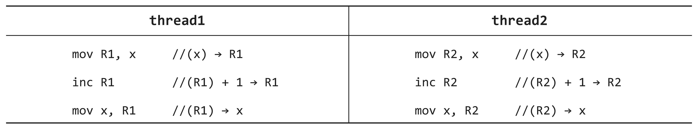

2018-01
栈和队列的应用若栈S₁中保存整数，栈S₂中保存运算符，函数F()依次执行下述各步操作：
（1）从S₁中依次弹出两个操作数a和b；
（2）从S₂中弹出一个运算符op；
（3）执行相应的运算b op a；
（4）将运算结果压入S₁中。
假定S₁中的操作数依次是5,8,3,2（2在栈顶），S₂中的运算符依次是*, -, +（+在栈顶）。
调用3次F()后，S₁栈顶保存的值是__。
答案：B
本题讲解：操作数栈与运算符栈协同求值
答案：B（S1 栈顶为 15）。
第一步：明确 F() 的取数与运算口径
S1 自底向上是 5、8、3、2（栈顶 2），S2 自底向上是 *、-、+（栈顶 +）。F() 依次：先弹出的操作数记为 a（栈顶那个），再弹出的是 b，从 S2 弹出栈顶运算符 op，计算 b op a，结果压回 S1。每次调用消耗 2 个操作数、1 个运算符，3 次调用正好把 S2 清空。
第二步：逐次模拟三次 F()
| 次数 | a（先弹） | b（后弹） | op | 计算 b op a | S1 变化 | S1 栈顶 |
|---|---|---|---|---|---|---|
| 第 1 次 | 2 | 3 | + | 3 + 2 = 5 | 5,8,5 | 5 |
| 第 2 次 | 5 | 8 | - | 8 - 5 = 3 | 5,3 | 3 |
| 第 3 次 | 3 | 5 | * | 5 × 3 = 15 | 5,15 | 15 |
第 1 次：弹出 a=2、b=3 与 op=+，得 3+2=5 压回，S1 变为 5,8,5；第 2 次：弹出 a=5、b=8 与 op=-，得 8-5=3，S1 变为 5,3；第 3 次：弹出 a=3、b=5 与 op=*，得 5×3=15。故 S1 栈顶保存的值是 15，选 B。
易错点
- 把 a、b 的角色弄反：若按「先弹的当 b、后弹的当 a」算，第 2 次会得 5-8=-3，最终 -15，误选 A。
- 认为运算符按书写顺序使用：S2 的栈顶是 +，最先参与运算的就是 +；运算符栈的弹出顺序是 +、-、*。
- 漏掉结果回压 S1：每次 F() 的结果都要参与下一次运算，不回压会算不下去。
一句话：先弹的给 a、后弹的给 b，按 b op a 计算并压回操作数栈；三次调用后栈顶 15，选 B。
2018-02
栈队列现有队列Q与栈S，初始时Q中的元素依次是1,2,3,4,5,6（1在队头），S为空。若仅允许下列3种操作：①出队并输出出队元素；②出队并将出队元素入栈；③出栈并输出出栈元素，则不能得到的输出序列是__。
答案：C
本题讲解：队列 + 栈混合输出的可行性判定
答案：C（该序列得不到）。
第一步：抓住三条铁律
队列只能从队头出（FIFO），栈只能从栈顶出（LIFO）。输出只可能来自两处：操作①直接输出队头元素，操作③弹出栈顶元素。想输出队尾方向的元素，排在前面的元素必须先离开队列——要么被直接输出，要么经操作②压进栈暂存。
第二步：验证可得序列（A、B、D）
- A：1,2,5,6,4,3——①出 1、①出 2；②3 入栈、②4 入栈；①出 5、①出 6；③弹 4、③弹 3。可行。
- B：2,3,4,5,6,1——②1 入栈；①依次出 2,3,4,5,6；③弹 1。可行。
- D：6,5,4,3,2,1——②把 1~5 依次入栈；①出 6；③依次弹出 5,4,3,2,1。可行。
第三步：证明 C 得不到
C 是 3,4,5,6,1,2。想第一个输出 3，则 1、2 都不能被输出，只能经操作②压入栈，此时栈内自底向上是 1、2，栈顶是 2。随后 4、5、6 由队头直接出队。剩下的输出必须是 1,2，但栈顶是 2：操作③只能先弹出 2，得到 ...,2,1；想让 1 先出，必须先弹出压着它的 2——矛盾。故 C 不可得，选 C。
易错点
- 以为栈能任意颠倒顺序：栈只能整体后进先出，1 压在 2 之下，2 不出 1 永远出不来。
- 忽略操作①仍在可用：C 中 4,5,6 确实可以直接出队，但这改变不了栈内 2 压着 1 的事实。
- 只盯开头：判定要看全过程约束，不是只看第一个元素能否输出。
判定口诀：队列负责保序，栈负责逆转；一旦「后该输出的压在栈顶下面」，序列必不可得。
2018-03
数组和特殊矩阵设有一个 12×12 的对称矩阵 M，将其上三角部分的元素 mi,j（1≤ i≤ j≤12）按行优先存入 C 语言的一维数组 N 中，元素 m6,6 在 N 中的下标是__。
答案：A
本题讲解：上三角对称矩阵的行优先压缩下标
答案：A（下标 50）。
第一步：确定每行存放的元素个数
对称矩阵只存上三角部分：第 i 行存放 m 下标为 (i,j)、j 从 i 到 12 的元素，共 12 − i + 1 = 13 − i 个。行 1 放 12 个、行 2 放 11 个、……、行 i 放 13 − i 个。
第二步：累加到第 6 行之前
| 行 i | 1 | 2 | 3 | 4 | 5 |
|---|---|---|---|---|---|
| 该行元素个数 13−i | 12 | 11 | 10 | 9 | 8 |
| 累计元素个数 | 12 | 23 | 33 | 42 | 50 |
前 5 行共存放 12+11+10+9+8 = 50 个元素，占据 N[0] 到 N[49]。
第三步：m(6,6) 的下标
第 6 行存放的元素是 (6,6)、(6,7)、……、(6,12)，m(6,6) 是第 6 行的第一个元素，正好落在累计 50 个元素之后，即 N[50]。C 语言数组下标从 0 开始，所以 m(6,6) 的下标是 50，选 A。
易错点
- 按下标从 1 起数：若忘记 C 语言下标从 0 开始，会算成 51，误选 B。
- 以为 m(6,6) 前还有同行元素：行优先存上三角时，每行从对角线元素开始，m(6,6) 前面没有第 6 行的元素。
- 每行个数算错：上三角第 i 行是 13 − i 个（j 从 i 到 12），不是固定 12 个。
一句话：m(6,6) 前共 12+11+10+9+8 = 50 个元素，C 语言 0 起下标恰为 50。
2018-04
二叉树的概念设一棵非空完全二叉树T的所有叶结点均位于同一层，且每个非叶结点都有2个子结点。若T有k个叶结点，则T的结点总数是__。
答案：A
本题讲解：用 n0 = n2 + 1 求结点总数
答案：A（2k − 1）。
第一步：翻译题干条件
「所有叶结点均位于同一层，且每个非叶结点都有 2 个子结点」意味着树中不存在度为 1 的结点：结点只有叶结点（度 0）和非叶结点（度 2）两类，即 n1 = 0。这种形态正是每层排满的满二叉树形态。
第二步：列方程求解
二叉树的通用恒等式：n0 = n2 + 1（由「边数 = 结点数 − 1 = n1 + 2·n2」移项得到）。设叶结点 n0 = k，则 n2 = k − 1。结点总数 = n0 + n1 + n2 = k + 0 + (k − 1) = 2k − 1。
第三步：用小例子验证
k = 4 的满二叉树（第 3 层 4 个叶结点，第 1、2 层共 3 个非叶结点）：结点总数 4 + 3 = 7 = 2×4 − 1，公式成立。故选 A。
易错点
- 误选 D（2^k − 1）：2 的 h 次方减 1 是按树高 h 数结点的公式，本题 k 是叶结点数而非深度。
- 误选 B（2k）：忘了 n2 = k − 1 中的 −1，那个 1 对应「根结点没有父结点的边指向它」。
- 误选 C（k²）：结点数与叶结点数是线性关系，不存在平方关系。
记忆锚点：叶结点数为 k 的满形态二叉树，结点总数恒为 2k − 1。
2018-05
树与二叉树的应用已知字符集{a, b, c, d, e, f}，若各字符出现的次数分别为6, 3, 8, 2, 10, 4，则对应字符集中各字符的哈夫曼编码可能是__。
答案：A
本题讲解：哈夫曼树的构造与编码验证
答案：A。
第一步：按权值逐步合并构造哈夫曼树
权值：a=6、b=3、c=8、d=2、e=10、f=4。每步取当前权值最小的两个结点合并：
- 最小的两个是 d=2、b=3，合并得新结点 5；
- 剩下中最小的两个是 f=4 和新结点 5，合并得 9；
- a=6 与 c=8 合并得 14；
- 9 与 e=10 合并得 19；
- 14 与 19 合并得根 33，树建成。
第二步：写编码并验证
约定左分支为 0、右分支为 1：a=00、c=01、e=11、f=100、d=1010、b=1011。按 a,b,c,d,e,f 顺序排列为 00, 1011, 01, 1010, 11, 100，与选项 A 完全一致。带权路径长度 WPL = 6×2 + 3×4 + 8×2 + 2×4 + 10×2 + 4×3 = 80，是这组权值的最优值。
第三步：快速排除其余选项
- B：编码长度为 2,3,3,3,4,2，WPL = 12+9+24+6+40+8 = 99，不是最优，错。
- C：长度与 A 相同，但 a 的编码 10 是 b 的编码 1011 的前缀，违反前缀编码性质，错。
- D：长度为 4,2,2,4,2,3，WPL = 24+6+16+8+20+12 = 86，不是最优，错。
易错点
- 合并对象取错：第 2 步必须拿 f=4 与刚合并出的 5 结合，不是 4 和 6。
- 只看长度不看前缀性质：C 与正确答案长度完全相同，必须用「任一编码都不是其他编码的前缀」检验。
- 0/1 分支约定：左右互换会得到另一组等价编码，所以题目问「可能是」；只要 WPL 最优且满足前缀性质即可。
一句话：合并序列 2+3→5、4+5→9、6+8→14、9+10→19、14+19→33，编码 00,1011,01,1010,11,100，选 A。
2018-06
树形查找已知二叉排序树如下图所示，元素之间应满足的大小关系是__。

答案：C
本题讲解：二叉排序树的中序定序法
答案：C。
第一步：先立机制——为什么 BST 一"中序"就升序
二叉排序树的性质是子树级的：任取一个结点，其左子树里的所有结点都比它小，右子树里的所有结点都比它大。中序遍历按"左子树 → 根 → 右子树"访问，于是每个结点被输出时，比它小的已经全部输出完，比它大的还一个没出——这条性质对每个子树递归成立，整串输出必然严格递增。所以本题的钥匙不是逐对比较大小，而是把图读成树形，走一遍中序，全序到手，再拿四个选项来对号。
第二步：从图中读出树形
图上 5 个结点连成一条之字形链，父子与左右由位置判定：x1 位置最高是根；x2 在 x1 右下方，是 x1 的右孩子；x3 在 x2 左下方，是 x2 的左孩子；x4 在 x3 右下方，是 x3 的右孩子；x5 在 x4 左下方，是 x4 的左孩子。
第三步：走一遍中序，序列自然展开
- 访问 x1：它没有左子树，直接输出 x1；
- 进入右子树 x2：x2 有左子树（x3 一支），必须先把它处理完；
- x3 无左孩子，输出 x3，再进它的右子树 x4；x4 有左孩子 x5，按"左→根→右"先输出 x5、再输出 x4；
- 回到 x2 输出，x2 无右孩子，结束。
中序序列为 x1, x3, x5, x4, x2，即 x1 < x3 < x5 < x4 < x2。
第四步：选项对号入座
| 选项 | 断言 | 用全序检验 |
|---|---|---|
| A | x1 < x2 < x5 | x5 在 x2 的左子树内，必有 x5 < x2，错 |
| B | x1 < x4 < x5 | x5 是 x4 的左孩子，必有 x5 < x4，错 |
| C | x3 < x5 < x4 | 与全序一致，对 |
| D | x4 < x3 < x5 | x4 在 x3 的右子树内，必有 x3 < x4，错 |
易错点
- 只比较直接父子：祖先—后代之间没有边直接相连，但子树性质照样管用——x5 在 x2 的子树里就必小于 x2；选项 A 正是漏了这一层。
- 左右孩子凭上下位置猜：左右由横向位置决定（x3 在 x2 左侧就是左孩子），"画得靠下"不等于"是右孩子"。
- 跳过中序逐对猜：先写出完整中序，再逐条核对，每条断言都有全序兜底，不会漏判。
一句话：BST 中序即升序，本树中序为 x1 < x3 < x5 < x4 < x2，唯一正确的断言是 C。
2018-07
图的应用下列选项中，不是如下有向图的拓扑序列的是__。

答案：D
本题讲解：拓扑序列的判定（入度法逐步模拟）
答案：D（不是拓扑序列）。
第一步：先立机制——拓扑序到底在要求什么
有向图里每条边 u→v 都是一条"先后约束"：u 必须排在 v 之前。一个序列是拓扑序列，当且仅当它不违反任何一条约束。落到操作上就是入度法：一个顶点的入度 = 还没排完的前驱个数。入度为 0，说明所有指向它的边的那一端都已输出，它可以安全地排下一个；输出它之后，要把它发出的所有出边一并"销账"，让后继的入度各减 1。判定给定序列，就按序列顺序逐个检查：轮到它时，它的入度是不是恰好为 0。
第二步：整理图与初始入度
由图得 8 条有向边：1→2、1→3、2→3、2→6、3→4、5→2、5→4、6→4。初始入度：1:0、5:0、2:2（来自 1、5）、3:2（来自 1、2）、4:3（来自 3、5、6）、6:1（来自 2）。第一个输出的只能从入度为 0 的 1、5 中选。
第三步：验证 A、B、C 均可行
- A：1,5,2,3,6,4——出 1 后 2:1、3:1；出 5 后 2:0、4:2；出 2 后 3:0、6:0；再出 3（4:1）、6（4:0）、4。每步入度恰好归零，可行。
- B：5,1,2,6,3,4——出 5（2:1、4:2）→ 1（2:0、3:1）→ 2（3:0、6:0）→ 6（4:1）→ 3（4:0）→ 4。可行。
- C：5,1,2,3,6,4——出 3 时，约束它的 1→3、2→3 已先后销账，3 的入度恰为 0；其余同 B。可行。
第四步：D 在第二步断链
D 是 5,2,1,6,3,4。第一步输出 5，只销掉 5→2、5→4 两条账，此时 2 的入度 = 2 − 1 = 1——边 1→2 还压着，前驱 1 还没输出。可序列下一个偏要输出 2：它入度不为 0，直接违反 1→2 的先后约束，拓扑排序到此无法继续。故 D 不是该图的拓扑序列，选 D。
易错点
- 只看相邻两个元素之间有没有边：约束是全序级的，必须逐个检查"轮到它时入度是否为 0"；相邻两点间无边不代表前面没有未满足的约束。
- 忘记销账：输出顶点后不删它的出边，后面所有入度全错；B、C 的判定都依赖正确销账。
- 错怪 6：D 的问题不在 6 排在哪，而在 2 抢在了 1 之前。
一句话：拓扑序 = 每条边起点先于终点；入度为 0 才能输出。D 中输出 2 时 1→2 还在，断链，选 D。
2018-08
B树和B+树高度为5的3阶B树含有的关键字个数至少是__。
答案：B
本题讲解：3 阶 B 树的最少关键字个数
答案：B（31）。
第一步：先立机制——"至少"意味着每个结点都压着下限长
m 阶 B 树对结点度的下限是定义死的：根结点（非叶时）至少 2 棵子树、1 个关键字——根是全树查找的入口，若允许它只有 1 棵子树，这层分叉就毫无意义；非根结点至少 ⌈m/2⌉ 棵子树，3 阶即 ⌈3/2⌉ = 2 棵，对应至少 1 个关键字。求"至少含多少关键字"，就让树里每个结点都取下限：个个 1 个关键字、2 棵子树——于是每层结点数恰好翻倍，树瘦成一条"满二叉树形状"的骨架。
第二步：高度口径——本题高度 5 对应 5 层关键字结点
高度 5 按真题口径是从根到最底层关键字结点共 5 层（查找失败的外部结点不占层）。这是本题第一个陷阱：若按"高度把失败结点层也算进去"的口径，关键字结点只剩 4 层，会得出 15——恰是干扰项 A。做题时用答案口径反推校准：5 层逐层翻倍得 1、2、4、8、16，总关键字 31，与选项 B 吻合。
第三步：逐层累加
| 层 | 1 | 2 | 3 | 4 | 5 |
|---|---|---|---|---|---|
| 最少结点数 | 1 | 2 | 4 | 8 | 16 |
| 每结点最少关键字 | 1 | 1 | 1 | 1 | 1 |
关键字总数最少 = 1 + 2 + 4 + 8 + 16 = 31。这与通用公式一致：m 阶 B 树高度 h 的最少关键字数 = 2×⌈m/2⌉^(h−1) − 1，本题即 2×2⁴ − 1 = 31——公式来历就是"根先放 1 个，往下一代代翻倍"。
易错点
- 误选 A（15）：只数了 4 层关键字结点，把高度口径弄错一层。
- 误选 C（62）：以为每个结点至少 2 个关键字——3 阶 B 树结点最多 2 个关键字，最少情形压在 1 个上。
- 误选 D（242）：242 是每个结点都取上限（3 棵子树、2 个关键字，结点数 1,3,9,27,81）数出的"最多"关键字数 = 2×(1+3+9+27+81)——题目问的是"至少"。
记忆锚点：最少关键字 = 2×⌈m/2⌉^(h−1) − 1；3 阶、h = 5 时 = 2×2⁴ − 1 = 31。
2018-09
散列（Hash）表现有长度为7、初始为空的散列表HT，散列函数H(k) = k % 7，用线性探测再散列法解决冲突。将关键字22，43，15依次插入到HT后，查找成功的平均查找长度是__。
答案：C
本题讲解：线性探测散列表与查找成功 ASL
答案：C（ASL = 2）。
第一步：依次插入并数探测次数
散列函数 H(k) = k % 7：22 → 1、43 → 1、15 → 1，三个关键字散列到同一槽位，正好考查线性探测再散列（冲突则顺次探测下一格）。
- 22：H=1，槽 1 为空 → 直接存入，比较 1 次；
- 43：H=1，槽 1 已被 22 占用 → 探测槽 2，为空 → 存入，比较 2 次；
- 15：H=1，槽 1、槽 2 均被占用 → 探测槽 3，为空 → 存入，比较 3 次。
第二步：求查找成功的平均查找长度
| 关键字 | 存放槽位 | 查找成功比较次数 |
|---|---|---|
| 22 | 1 | 1 |
| 43 | 2 | 2 |
| 15 | 3 | 3 |
查找成功时从 H(k) 指示的槽位沿探测序列找到该元素，比较次数与插入时相同。ASL = (1 + 2 + 3) / 3 = 2，选 C。
易错点
- 以为冲突就存不进去：线性探测是「下一格继续探测」，43 存槽 2、15 存槽 3，都能存入。
- 分母用表长 7：查找成功的 ASL 只对表中实际存在的 3 个元素求平均，分母是 3 不是 7。
- 忘记堆积影响：三个关键字同散列地址形成连续占用块，15 的比较次数被推高到 3 次。
一句话：三次插入分别比较 1、2、3 次，ASL = (1+2+3)/3 = 2，选 C。
2018-10
插入排序对初始数据序列(8,3,9,11,2,1,4,7,5,10,6)进行希尔排序。若第一趟排序结果为(1,3,7,5,2,6,4,9,11,10,8)，第二趟排序结果为(1,2,6,4,3,7,5,8,11,10,9)，则两趟排序采用的增量（间隔）依次是__。
答案：D
本题讲解：由排序结果反推希尔增量
答案：D（5，3）。
第一步：反推思路
希尔排序的一趟：把序列分成 d 个组（下标相差 d 的元素同组），各组内分别做插入排序，结果只保证「组内有序」。题目没给增量序列的规则，只能把候选增量逐一代入模拟、与题给结果比对。
第二步：反推第一趟增量
- 试 d=3：位置 1,4,7,10 的组为 8,11,4,10，组内排序后位置 1 变成 4，与结果首元素 1 不符 → 排除 A、B；
- 试 d=5：5 个组为 8,1,6｜3,4｜9,7｜11,5｜2,10（按位置 1,6,11｜2,7｜3,8｜4,9｜5,10 分组），各组内排序后回填，整个序列变为 (1,3,7,5,2,6,4,9,11,10,8)，与题给第一趟完全一致 → 第一趟增量 d1 = 5。
第三步：反推第二趟增量
在第一趟结果 (1,3,7,5,2,6,4,9,11,10,8) 上：
- 试 d=2：组 1,7,2,4,11,8（位置 1,3,5,7,9,11）排序后位置 3 变成 2，与结果第 3 位 6 不符 → 排除 C；
- 试 d=3：3 个组为 1,5,4,10｜3,2,9,8｜7,6,11，组内排序后回填得 (1,2,6,4,3,7,5,8,11,10,9)，与题给第二趟完全一致 → 第二趟增量 d2 = 3。
两趟增量依次为 5、3，选 D。
易错点
- 默认增量是长度折半：11 个元素折半思路会先试 5，碰巧对，但第二趟想当然取 2 就错了——必须逐个验证。
- 组内排序写成整体排序：一趟希尔只让各组内部有序，其他组的位置不受影响。
- 只比首元素：d=3 时首元素 4 已与 1 矛盾可快速排除，但确认正确增量应整趟模拟比对。
一句话：d1=5 与第一趟结果吻合、d2=3 与第二趟结果吻合，选 D。
2018-11
选择排序在将数据序列(6,1,5,9,8,4,7)建成大根堆时，正确的序列变化过程是__。
答案：A
本题讲解：自底向上建大根堆
答案：A。
第一步：先立机制——为什么从最后一个非叶结点开始、倒序处理
堆用数组存的完全二叉树表示：编号 i 的结点，左孩子 2i、右孩子 2i+1。建堆用的"下沉"操作有一个前提：当前结点的左右子树都已经是堆，它才能通过"与大孩子交换"把自己这块调平。叶结点没有孩子，天生就是堆，不用处理；于是从最后一个非叶结点编号 ⌊n/2⌋ = ⌊7/2⌋ = 3 开始，倒序处理 3、2、1——每走到一个结点，它的两棵子树都已被处理成堆，前提成立。反过来若从根开始（选项 B 的做法），根的子树那时还不是堆，"调平"无从谈起，这正是建堆必须自底向上的原因。
第二步：逐步下沉（每次与较大的孩子比较）
初始序列（按编号）6,1,5,9,8,4,7：
- 结点 3（值 5）：孩子 4、7，最大孩子 7 > 5，交换 → 6,1,7,9,8,4,5；
- 结点 2（值 1）：孩子 9、8，最大孩子 9 > 1，交换 → 6,9,7,1,8,4,5；
- 结点 1（值 6）：孩子 9、7，9 > 6，交换 → 9,6,7,1,8,4,5——6 换到结点 2 的位置，还没完；
- 结点 2（值 6）继续下沉：孩子 1、8，8 > 6，交换 → 9,8,7,1,6,4,5（这就是"下沉要沉到底"：交换后必须沿新位置继续向下检查，直到不违反堆性质）；
- 结点 3（值 7）复查：孩子 4、5，均不大于 7，不动。堆建成：9,8,7,1,6,4,5。
第三步：对照选项
全过程变化序列 6,1,7,9,8,4,5 → 6,9,7,1,8,4,5 → 9,6,7,1,8,4,5 → 9,8,7,1,6,4,5 与选项 A 完全一致。
易错点
- 从根开始建堆（选项 B）：下沉前提"子树已是堆"不成立，过程错误；正确顺序是 ⌊n/2⌋ → 1。
- 下沉一次就停：第 3 步的 6 换到结点 2 后还要继续沉到下一层，漏掉就停在 9,6,7,… 这类非法中间态。
- 与较小的孩子交换（选项 D 结尾 9,8,6,1,7,4,5 正是此错）：必须与两个孩子中较大者交换，否则大孩子仍压在下面，堆性质照样被破坏。
一句话：从 ⌊n/2⌋ = 3 倒序下沉、沉到底，全过程即 A，最终堆 9,8,7,1,6,4,5。
2018-12
计算机系统层次结构数制与编码冯·诺依曼结构计算机中数据采用二进制编码表示，其主要原因是__。
I. 二进制的运算规则简单
II. 制造两个稳态的物理器件较容易
III. 便于用逻辑门电路实现算术运算
答案：D
本题讲解：冯·诺依曼机为什么用二进制
答案：D（I、II 和 III 三条全部正确）。
第一步：逐条核对三个说法
- I. 二进制的运算规则简单：二进制只有
0、1两个数码，加法只有"逢二进一"一种套路，运算规则远比十进制简单——成立。 - II. 制造两个稳态的物理器件较容易：让电路稳定处于"高电平/低电平"两个状态很容易做到且抗干扰强，要造出十个稳定状态的器件则非常困难——成立。
- III. 便于用逻辑门电路实现算术运算：0/1 恰好对应逻辑代数的"假/真"，加、减、乘、除都能化成与、或、非等门电路的组合——成立。
第二步：组合选项
三条都是教材上"为什么计算机采用二进制"的标准理由，没有一条是伪命题，因此 I、II、III 全选。
| 选项 | 组合 | 判断 |
|---|---|---|
| A | 仅 I、II | 漏了 III |
| B | 仅 I、III | 漏了 II |
| C | 仅 II、III | 漏了 I |
| D | I、II 和 III | 全对 |
易错点
- 以为"运算规则简单"不算硬件上的理由：I 常被误删而错选 C——运算规则简单正是"便于用门电路实现"的前提，I 和 III 要一起选。
- 混淆因果关系：不是"先有十进制习惯再改造"，而是物理器件天然适合两种稳态，才决定了用二进制编码。
一句话：三个理由稳稳凑齐，I、II、III 全选，答案 D。
2018-13
数制与编码运算方法和运算电路假定带符号整数采用补码表示，若int型变量x和y的机器数分别是FFFF FFDFH和0000 0041H，则x、y的值以及x-y的机器数分别是__。
答案：C
本题讲解：补码真值还原与减法结果的机器数
答案：C（x = −33，y = 65，x−y 的机器数为 FFFF FF9EH）。
第 0 步：先把机制立住——补码是模运算下的记数
32 位共 2³² 个状态，构成一个环：最高位为 0 的状态表示 0 ~ 2147483647；最高位为 1 的状态表示负数，真值 = 无符号解释值 − 2³²。为什么减一次模就能还原？因为位串代表负数 −t，正是由于 −t ≡ (2³² − t) (mod 2³²)。于是"求负数 −t 的位串"就是算 2³² − t，而二进制的"取反加一"恰好完成它：按位取反得 (2³² − 1) − t，再加一得 2³² − t。取反后忘加一，结果恰好差 1——这不是巧合，是公式本身的形状。
第一步：还原 x 和 y 的真值
- y =
0000 0041H：最高位 0，正数直接读：41H = 4×16 + 1 = 65。 - x =
FFFF FFDFH：最高位 1，是负数。取反加一：0000 0020H+ 1 =0000 0021H= 33 → x = −33。（模运算小验证：低字节 DFH = 223，223 − 256 = −33，与全 32 位的读法一致。）
第二步：算 x − y 并判断溢出
x − y = −33 − 65 = −98。int 的表示范围是 −2147483648 ~ +2147483647，−98 远在界内 → 不溢出，干扰项 A 的"溢出"不成立。
第三步：把 −98 写回 32 位补码
求 −98 的位串 = 算 2³² − 98，走"取反加一"：98 = 0000 0062H，按位取反得 FFFF FF9DH，末位加一得 FFFF FF9EH。若忘加一停在 FFFF FF9DH，那是 −99 的编码——干扰项 B 正是这个"差一"错误。
易错点
- 把 x 算成 −65（干扰项 A、D）：必须对全 32 位取反加一；−33 与 −65 的位串（
FFFF FFDFH与FFFF FFBFH）不要混。 - 取反后忘记加一（干扰项 B）：补码差 1，最高位仍是 1，最易漏检——回到模运算公式即可自查。
- 看到两个负号就以为溢出：溢出看真值结果是否越界，与位串"长得吓不吓人"无关。
补码口诀：位串与真值按"模 2³²"互相换算；求负数位串、还原负数真值，都走"取反加一"。
2018-14
浮点数的表示与运算IEEE 754单精度浮点格式表示的数中，最小的规格化正数是__。
答案：A
本题讲解：IEEE 754 单精度的最小规格化正数
答案：A（1.0×2^-126）。
第一步：盯住"规格化"三个字
单精度格式 = 1 位数符 + 8 位阶码（移码，偏置 127）+ 23 位尾数。规格化数隐含首位 1，写成 1.M × 2^E。要找"最小正数"，就让指数尽量小、尾数取最小。
第二步：阶码字段的最小值不是 0
8 位阶码字段有两个保留值：
| 阶码字段 | 用途 |
|---|---|
| 全 0 | 表示 ±0 和非规格化小数 |
| 全 1 | 表示 ±∞ 和 NaN |
所以规格化数的阶码字段最小只能取 0000 0001，对应真实指数 E = 1 − 127 = −126；尾数位全 0 时尾数最小，为 1.0。故最小规格化正数 = 1.0×2^-126。
第三步：认清干扰项的来历
1.0×2^-127（B）：错在把"字段全 0 不可用"忘了，或把偏置关系弄反。1.0×2^-128（C）：错得更远，不存在对应的合法编码。1.0×2^-149（D）：这是最小非规格化正数（2^-126 × 2^-23），题目问的是规格化数，不能选。
易错点
- 看到"最小正数"就选
2^-149：那是非规格化数的答案，"规格化"三个字把它排除。 - 忘了阶码字段全 0、全 1 是保留值：误以为最小指数是 0 − 127 = −127，从而错选 B。
记忆锚点：单精度规格化指数范围 −126 ～ +127，最小规格化正数就是 1.0×2^-126。2018-15
数制与编码浮点数的表示与运算程序的机器级代码表示某32位计算机按字节编址，采用小端（Little Endian）方式。若语句“int i = 0;”对应指令的机器代码为“C7 45 FC 00 00 00 00”，则语句“int i = -64;”对应指令的机器代码是__。
答案：A
本题讲解：小端方式下的指令机器代码
答案：A（C7 45 FC C0 FF FF FF）。
第一步：认清机器代码的结构
int i = 0; 的机器代码 C7 45 FC 00 00 00 00 共 7 字节：前 3 字节 C7 45 FC 是操作码、寻址方式与位移量字段，与 i 的数值无关；后 4 字节 00 00 00 00 就是 32 位立即数 0 的补码。换成 int i = -64; 后，只有后 4 字节变化。
第二步：求 −64 的 32 位补码
64 = 0000 0040H；按位取反得 FFFF FFBFH，末位加一得 FFFF FFC0H。所以 −64 的补码机器数（从高位到低位）为 FF FF FF C0。
第三步：按小端方式落到字节序列
小端方式：低位字节放在低地址。把 FFFFFFC0H 从低位到高位拆字节：最低位字节 C0 放在最低地址，其后依次 FF、FF、FF。
拼接：C7 45 FC + C0 FF FF FF = C7 45 FC C0 FF FF FF。
易错点
- 大端小端搞反（选项 C、D）：把高位字节
FF排在了前面。口诀：小端 = 低位字节在低地址（"低位在前"）。 - 半字节颠倒（选项 B）：把
C0误写成0C——C0 是 1100 0000，0C 是 0000 1100，完全不同。 - 补码只算 8 位：
C0H恰好也是 −64 的 8 位补码，但这里机器数必须写成完整 32 位FFFFFFC0H再拆字节，才能确定后面跟三个FF。
三步走：求补码 → 从低位到高位拆字节 → 小端"低位字节在低地址"排队。
2018-16
运算方法和运算电路整数x的机器数为1101 1000，分别对x进行逻辑右移1位和算术右移1位操作，得到的机器数分别是__。
答案：B
本题讲解：逻辑右移与算术右移
答案：B（逻辑右移得 0110 1100，算术右移得 1110 1100）。
第一步：先立机制——右移的差别全在"补什么"
右移 1 位 = 各位整体右移一格、最低位丢弃，左端空出 1 位。两种移位的一切差别都在空出的那一位补什么，而补什么的规则来自位串的两种解释：
- 逻辑右移把位串当无符号数：无符号数没有"符号欠账"的概念，空位只能补 0，才能保持"右移后 ≈ 原数除以 2"的意义（补 1 会凭空多出一大截）。
- 算术右移把位串当补码有符号数：补码负数的"负"由高位一串 1 共同承担，符号位统领全部高位含义，所以空位必须补符号位——否则负数右移一次就翻身变正数，"除以 2"的意义全毁。
第二步：看 x 的关键特征并分别执行
x = 1101 1000，最高位是 1（负数）：
- 逻辑右移 1 位：高位补 0 →
0110 1100； - 算术右移 1 位：高位补符号位 1 →
1110 1100。
数值印证：x 按无符号读是 216，216 ÷ 2 = 108 = 0110 1100 ✓；x 按补码读是 −40，算术右移得 1110 1100 = −20 = −40 ÷ 2 ✓——两种移位各自守住了自己那种解释下的"除以 2"。
第三步：对号入座
题目先问逻辑右移、后问算术右移，顺序是"逻辑在前、算术在后"；只有 B 的两个结果与顺序都对。
易错点
- 顺序记反（选项 C）：把算术结果填在逻辑的位置——先看题目问的次序再对答案。
- 以为算术右移也补 0（选项 A、D）：补 0 会把负数
1101 1000翻成0110 1100，这正是算术右移必须补符号位的理由。
一句话：逻辑右移补 0（无符号解释），算术右移补符号位（补码解释）；符号位是 1 就补 1。
2018-17
主存储器假定DRAM芯片中存储阵列的行数为r、列数为c，对于一个2K×1位的DRAM芯片，为保证其地址引脚数最少，并尽量减少刷新开销，则r、c的取值分别是__。
答案：C
本题讲解：DRAM 行列结构的两个约束
答案：C（r = 32、c = 64）。
第一步：地址引脚数由"较大的那一维"决定
DRAM 芯片为省引脚，把地址拆成行、列两部分分时复用同一组地址引脚，所以地址引脚数 = max(log2 r, log2 c)。2K×1 位芯片共 2048 个存储单元，r × c = 2048，即 log2 r + log2 c = 11 恒成立；要 max 尽量小，行、列就要尽量接近。
| 选项 | r × c | max(log2 r, log2 c) → 地址引脚 |
|---|---|---|
| A | 2048 × 1 | 11 根 |
| B | 64 × 32 | 6 根 |
| C | 32 × 64 | 6 根 |
| D | 1 × 2048 | 11 根 |
B、C 并列最少（6 根）。
第二步：刷新开销看行数
DRAM 按行刷新，刷新一遍全部单元的开销正比于行数 r：r = 64 要刷 64 行，r = 32 只刷 32 行。所以"尽量减少刷新开销"要求行数尽量少 → 取 r = 32、c = 64。
易错点
- 只比到引脚数就选 B：64×32 与 32×64 引脚一样多，还要再比刷新开销——行数少的才是答案。
- 以为刷新按列进行：DRAM 刷新按行进行，行数越多刷新占的时间越多。
两个约束两层筛：先"行列接近"压到 6 根引脚（剩 B、C），再"行数少"省刷新（选出 C）。
2018-18
指令的寻址方式按字节编址的计算机中，某double型数组A的首地址为2000H，使用变址寻址和循环结构访问数组A，保存数组下标的变址寄存器初值为0，每次循环取一个数组元素，其偏移地址为变址值乘以sizeof(double)，取完后变址寄存器内容自动加1。若某次循环所取元素的地址为2100H，则进入该次循环时变址寄存器的内容是__。
答案：B
本题讲解：变址寻址访问数组元素的地址计算
答案：B（32）。
第一步：写出地址公式
按字节编址，double 型占 8 字节。变址寄存器保存数组下标 i，初值 0，每取完一个元素自动加 1。元素 A[i] 的偏移地址 = i × sizeof(double) = 8i，故
元素地址 = 首地址 + 8i = 2000H + 8i
第二步：代入目标地址解方程
某次循环所取元素的地址为 2100H：
2000H + 8i = 2100H → 8i = 100H
100H = 16² = 256（十六进制的 100 不是一百），所以 i = 256 ÷ 8 = 32。进入该次循环时，变址寄存器的内容就是当前下标 i = 32。
易错点
- 把
100H当成十进制 100（干扰项 D 直接抄 100）：100H= 256，256 ÷ 8 = 32 才对。 - 忘记乘元素大小或乘错：直接拿地址差 256 当下标，或按 4 字节除（256 ÷ 4 = 64，干扰项 C），double 是 8 字节。
- 数错循环时机：题目问"进入该次循环时"寄存器的值，即取该元素之前的下标，不需要再加 1。
一句话：地址差除以元素大小——100H ÷ 8 = 256 ÷ 8 = 32。2018-19
运算方法和运算电路减法指令“sub R1, R2, R3”的功能为“(R1)－(R2)→R3”，该指令执行后将生成进位/借位标志CF和溢出标志OF。若(R1)=FFFF FFFFH，(R2)=FFFF FFF0H，则该减法指令执行后，CF与OF分别为__。
答案：A
本题讲解：减法指令的 CF 与 OF
答案：A（CF = 0，OF = 0）。
第一步：无符号视角定 CF
CF 是进位/借位标志，减法中 CF = 1 表示无符号数不够减（发生借位）。
(R1) = FFFF FFFFH = 4294967295，(R2) = FFFF FFF0H = 4294967280。大数减小数，够减，无借位 → CF = 0。
电路口径验证：减法化作加法，(R1) + (R2)取反 + 1 = FFFF FFFFH + 0000 000FH + 1 = 1 0000 000FH，最高位进位输出 Cout = 1；减法时 CF = Cout ⊕ 1 = 0。两种算法一致。
第二步：有符号视角定 OF
OF = 1 表示带符号运算溢出。(R1) = −1，(R2) = −16：
−1 − (−16) = 15，结果 0000 000FH 在 int 表示范围内 → OF = 0。
双进位法验证：符号位的进位输入与进位输出都为 1，1 ⊕ 1 = 0，无溢出。
第三步：写出结果并排除干扰
指令结果 (R3) = 0000 000FH。B、D 的 CF = 1 来自"减法必有借位"的误解；C、D 的 OF = 1 来自"负数减负数会溢出"的误解——同号相减永远不会溢出。
易错点
- 把加法器的最高进位直接当 CF：减法时 CF = 进位输出与 1 异或（本题 Cout = 1 恰对应 CF = 0）。
- 看到两个
FF开头的数就以为溢出：溢出看真值结果是否越界，−1 − (−16) = 15 完全装得下。
口径分工：CF 管无符号（借位），OF 管有符号（越界）；本题两者都不成立。
2018-20
指令流水线若某计算机最复杂指令的执行需要完成5个子功能，分别由功能部件A～E实现，各功能部件所需时间分别为80ps、50ps、50ps、70ps和50ps，采用流水线方式执行指令，流水线段寄存器延时为20ps，则CPU时钟周期至少为__。
答案：D
本题讲解：流水线 CPU 的时钟周期
答案：D（100ps）。
第一步：先立机制——为什么周期由"最慢一段 + 寄存器延时"决定
流水线把一条指令的执行切成 5 段，段与段之间用流水段寄存器隔开，所有段共用同一个时钟节拍：每个节拍里，各段同时开工、各自处理自己那一道指令，节拍结束时把结果写入下一级的段寄存器。节拍长度必须迁就最慢的要求——只要有一段在一个周期里干不完活，或写不完段寄存器，流水线就会撞车。所以时钟周期 ≥ 最长段耗时 + 段寄存器延时，与其他段多快无关：流水线的节拍永远是"短板"说了算。
第二步：逐段核对
| 功能段 | 耗时 | + 段寄存器延时 20ps | 合计 |
|---|---|---|---|
| A | 80ps | 20ps | 100ps |
| B | 50ps | 20ps | 70ps |
| C | 50ps | 20ps | 70ps |
| D | 70ps | 20ps | 90ps |
| E | 50ps | 20ps | 70ps |
最大值是 A 段的 100ps，故 CPU 时钟周期至少为 100ps。
易错点
- 取最长段 80ps 就交卷（选项 C）：漏加段寄存器写入的 20ps——每个周期都包含"干活 + 把结果锁存进段寄存器"两个动作。
- 把五段加总或求平均：加总（300ps）是非流水线执行一条指令的总时间；流水线各段并行推进，周期只由最慢一段决定，与总和无关。
- 忽略 D 段：70 + 20 = 90ps 也超过 80ps——就算漏看 A 段，80ps 同样不够。
口诀：流水线时钟周期 = 最慢段耗时 + 段寄存器延时 = 80 + 20 = 100ps。
2018-21
总线概述总线事务和定时下列选项中，可提高同步总线数据传输率的是__。
I. 增加总线宽度
II. 提高总线工作频率
III. 支持突发传输
IV. 采用地址/数据线复用
答案：B
本题讲解：提高同步总线数据传输率的手段
答案：B（仅 I、II、III）。
第一步：抓住数据传输率的构成
同步总线的数据传输率 ≈ 总线工作频率 × 每次并行传送的宽度 × 单位时间内有效数据传送的占比。凡能增大频率、加宽总线、减少"传地址等无效开销"的手段都有效；反之，为省资源做的妥协通常不提速。
第二步：逐条判断
- I. 增加总线宽度：数据线加宽（如 32 根加到 64 根），一个总线周期并行传送的位数翻倍 → 能提高。
- II. 提高总线工作频率：单位时间内的总线周期数增多 → 能提高。
- III. 支持突发传输：一次地址相位后连续传送多个数据字，省掉反复传地址的开销 → 能提高。
- IV. 采用地址/数据线复用：同一组信号线分时传地址和数据，目的是减少引脚、降低成本；地址相位期间数据线不能传数据，非但不提高传输率，反而可能拖慢 → 不能。
易错点
- 把"复用"当提速手段（干扰项 D）：复用省的是引脚，不是时间，方向恰好相反。
- 漏掉突发传输（干扰项 A）：突发（burst）传输正是高速总线提高成批数据传输效率的关键手段，与增加宽度、提高频率并列。
公式化记忆：传输率 = 频率 × 宽度 ×（有效数据占比）；复用与这三者都不沾边。
2018-22
异常和中断机制I/O方式下列关于外部I/O中断的叙述中，正确的是__。
答案：C
本题讲解：外部 I/O 中断的四个说法
答案：C。
第一步：回忆中断响应的全流程
外设发请求 → 中断控制器按优先级排队 → CPU 在一条指令执行结束时查询请求 → 若 CPU 处于开中断（中断允许）状态且请求未被屏蔽 → 执行中断隐指令（关中断、保存断点 PC 和 PSW、取中断向量）→ 转入中断服务程序，由服务程序保护通用寄存器等现场。
第二步：逐项核对
- A 错：排队依据是预先规定的中断优先级（硬件排队器实现），不是请求到达的先后次序。
- B 错：中断隐指令是硬件固定动作，只负责关中断、保存断点（PC）和程序状态字；通用寄存器的保存由中断服务程序（软件）完成。
- C 对：CPU 只有处于中断允许状态（开中断）才能响应外部设备（可屏蔽中断）的请求；关中断期间请求只能挂起。
- D 错：CPU 不能"立即"暂停当前指令，必须等一条指令执行完毕（执行周期结束）才检查并响应中断。
易错点
- 以为隐指令包办全部现场保护：隐指令只保存断点；通用寄存器属于"现场"，由服务程序按需压栈保存。
- 把优先级排队想成"先来先服务"：排队只看优先级，与到达时间无关。
- 认为响应可以在指令中途：指令执行到一半就转走会破坏执行的完整性，响应点固定在指令边界。
主线口诀：一条指令执行完 → 开中断 → 按优先级 → 隐指令保断点 → 服务程序保现场。
2018-23
操作系统的基本概念下列关于多任务操作系统的叙述，正确的是__。
I. 具有并发和并行的特点
II. 需要实现对共享资源的保护
III. 需要运行在多CPU的硬件平台上
答案：C
本题讲解：多任务操作系统的特性辨析
答案：C（仅 I、II 正确）。
第一步：理解「多任务」的本质
多任务（多道程序）系统的出发点：CPU 速度远高于 I/O 设备，于是让多个作业在单 CPU 上交替执行（宏观同时推进、微观串行占用 CPU），这就是并发。并发是多任务系统的基本特征，并不需要多 CPU——III 说「必须运行在多 CPU 硬件平台上」正是错的。
第二步：逐条判断
- I 正确：单 CPU 时多任务并发执行；若硬件有多个 CPU，多个任务还可同一时刻各自运行（并行）。所以多任务操作系统兼具并发和并行的特点。
- II 正确：多个任务并发地共享内存、文件、外设等资源，若不加以保护（互斥访问），程序结果将不可再现，因此必须实现对共享资源的保护。
- III 错误：单 CPU 上靠时间片轮转即可实现多任务；多 CPU 只是让并行成为可能，不是必要条件。
易错点
- 把「并发」等同于「并行」：并发是交替执行，并行是同一时刻同时执行；并发不需要多 CPU，故 III 错，干扰项 D 即错在此。
- 漏选 II：共享与并发相伴而生，没有资源保护就没有正确的并发。
结论：I、II 正确，III 错误，选 C。
2018-24
CPU调度某系统采用基于优先权的非抢占式进程调度策略，完成一次进程调度和进程切换的系统时间开销为1μs。在T时刻就绪队列中有3个进程P₁、P₂和P₃，其在就绪队列中的等待时间、需要的CPU时间和优先权如下表所示。
| 进程 | 等待时间 | 需要的 CPU 时间 | 优先权 |
|---|---|---|---|
| P₁ | 30μs | 12μs | 10 |
| P₂ | 15μs | 24μs | 30 |
| P₃ | 18μs | 36μs | 20 |
若优先权值大的进程优先获得 CPU，从 T 时刻起系统开始进程调度，系统的平均周转时间为__。
答案：D
本题讲解：非抢占优先权调度的平均周转时间
答案：D（75μs）。
第一步：定顺序、反推到达时刻
优先权值大者优先且非抢占：执行顺序为 P₂(30) → P₃(20) → P₁(10)。周转时间 = 完成时刻 − 到达时刻。T 时刻三个进程已分别等待 30、15、18μs，故它们的到达时刻是 T−30、T−15、T−18——表格里的等待时间就是用来反推到达时刻的，这是本题最大陷阱。
第二步：逐段推演时间轴（每次调度+切换开销 1μs）
| 时段 | 事件 | 完成时刻 |
|---|---|---|
| T→T+1 | 第 1 次调度切换，P₂ 上 CPU | — |
| T+1→T+25 | P₂ 运行 24μs | P₂：T+25 |
| T+25→T+26 | 第 2 次调度切换，P₃ 上 CPU | — |
| T+26→T+62 | P₃ 运行 36μs | P₃：T+62 |
| T+62→T+63 | 第 3 次调度切换，P₁ 上 CPU | — |
| T+63→T+75 | P₁ 运行 12μs | P₁：T+75 |
第三步：算各进程周转时间并求平均
- P₁：(T+75) − (T−30) = 105μs
- P₂：(T+25) − (T−15) = 40μs
- P₃：(T+62) − (T−18) = 80μs
平均周转时间 = (105 + 40 + 80) / 3 = 225 / 3 = 75μs。
易错点
- 从 T 时刻起算周转（得 (25+62+75)/3 = 54μs，误选 A）：等待的 30/15/18μs 必须计入周转时间。
- 漏加调度开销：完成一次进程调度和进程切换开销 1μs，共发生 3 次。
- 忘记优先权大的先跑：顺序是 P₂→P₃→P₁，不是按题面顺序。
结论：平均周转时间 75μs，选 D。
2018-25
同步与互斥属于同一进程的两个线程thread1和thread2并发执行，共享初值为0的全局变量x。thread1和thread2实现对全局变量x加1的机器级代码描述如下。

在所有可能的指令执行序列中，使 x 的值为 2 的序列个数是__。
答案：B
本题讲解：两线程并发执行 x++ 的结果分析
答案：B（2 个）。
第一步：认识「丢失更新」
每个线程 3 条指令：读 x → 加 1 → 写回 x。x 的最终值由最后一次写回决定。若两个线程都在对方写回之前读了 x（都读到旧值 0），则两次加 1 有一次被覆盖（丢失更新），最终 x = 1。
第二步：找出让 x=2 的条件
要使 x=2，必须有一个线程读到另一个线程写回的 1，即一个线程的 3 条指令全部执行完后，另一个线程才开始第一次读 x。由于线程内部指令顺序固定（a1→a2→a3、b1→b2→b3），这样的交错只有两种：
a1 a2 a3 | b1 b2 b3：T₁ 写回 1 → T₂ 读到 1、写回 2 → x = 2b1 b2 b3 | a1 a2 a3：T₂ 写回 1 → T₁ 读到 1、写回 2 → x = 2
第三步：排除其余序列
两条各 3 条指令的交错总数为 C(6,3) = 20 种；只要两线程发生穿插，就必有一方「先读后写」，读到的都是 0，最终 x = 1。所以满足 x=2 的序列恰为 2 个。
易错点
- 以为很多序列都能得 2：穿插必然破坏「后写者先读到对方结果」这一条件。
- 忽略线程内指令次序不可乱：插空时 a1→a2→a3、b1→b2→b3 的相对顺序必须保持。
结论：使 x=2 的执行序列恰好 2 个（两个全串行序列），选 B。
2018-26
死锁假设系统中有4个同类资源，进程P₁,P₂和P₃需要的资源数分别为4,3和1，P₁,P₂和P₃已申请到的资源数分别为2,1和0，则执行安全性检测算法的结果是
答案：A
本题讲解：银行家算法的安全性检测
答案：A（不存在安全序列，系统处于不安全状态）。
第一步：算可用资源与各进程「还需要」
| 进程 | 需要总量 | 已申请到 | 还需要 |
|---|---|---|---|
| P₁ | 4 | 2 | 2 |
| P₂ | 3 | 1 | 2 |
| P₃ | 1 | 0 | 1 |
系统共 4 个同类资源，已分出 2+1+0 = 3 个，可用 Available = 4 − 3 = 1。
第二步：逐一试探能否完成
- P₁：还需 2 大于可用 1，不能满足；
- P₂：还需 2 大于 1，不能满足；
- P₃：还需 1 不超过 1，可以满足——假定 P₃ 获得资源运行完成，并归还它已申请到的资源。
第三步：关键陷阱——P₃ 手里是 0 个
P₃ 已申请到的资源为 0，完成后归还 0 个，Available 仍是 1。再扫一遍：P₁、P₂ 还需要 2 都大于 1，谁也无法完成。找不到能让所有进程顺利完成的序列，即不存在安全序列。
易错点
- 以为 P₃ 完成后可用资源会变多：进程释放的是它占有的资源，P₃ 占有 0 个，Available 不增加。
- 看到 P₃ 能完成就选 C/D：安全性检测要求全部进程都能完成，缺一不可；C、D 还声称「唯一」，而这里连一个安全序列都没有。
结论：不存在安全序列，系统处于不安全状态，选 A。
2018-27
进程与线程简介下列选项中，可能导致当前进程P阻塞的事件是
I. 进程P申请临界资源
II. 进程P从磁盘读数据
III. 系统将CPU分配给高优先权的进程
答案：C
本题讲解：引起进程阻塞的事件辨析
答案：C（仅 I、II）。
第一步：分清「阻塞」与「就绪」
进程阻塞：因等待某事件（资源、I/O、消息）而主动放弃 CPU，进入该事件的等待队列；就绪：万事俱备、只欠 CPU。判断标准就一条——它等的是不是 CPU 以外的东西。
第二步：逐条判断
- I 申请临界资源：临界资源同一时刻只允许一个进程使用，P 申请时若正被别的进程占用，只能阻塞等待（如 P 操作失败被挂入等待队列）→ 会导致阻塞。
- II 从磁盘读数据：发出 I/O 请求后要等磁盘完成，期间 P 无法继续推进，进入等待 I/O 的阻塞队列 → 会导致阻塞。
- III 系统将 CPU 分配给高优先权的进程：P 是被剥夺（抢占）了 CPU，除了 CPU 它什么都不缺，被抢占后回到就绪队列等待下次调度，不是阻塞。
易错点
- 把「被剥夺 CPU」当成阻塞：时间片用完或被高优先权进程抢占 → 就绪态；等资源、等 I/O → 阻塞态。
- 忽略 III 的措辞：是「系统将 CPU 分配给高优先权的进程」，说明 P 是被动失去 CPU，而不是自己在等待某个事件。
结论：I、II 会导致阻塞，III 只是回到就绪态，选 C。
2018-28
同步与互斥若x是管程内的条件变量，则当进程执行x.wait()时所做的工作是
答案：D
本题讲解：管程中条件变量 x.wait() 的语义
答案：D。
第一步：管程与条件变量的分工
管程保证互斥：任一时刻只允许一个进程在管程内活动。进程在管程内发现条件不满足时，用条件变量 x 的两个专用操作来等待与唤醒：
x.wait()：条件不满足时，把当前进程阻塞，并插入 x 的阻塞（等待）队列，同时释放管程使用权；x.signal()：唤醒 x 阻塞队列上的一个进程。
第二步：逐项排除
- A：对变量 x 的互斥访问由管程机制（进入/退出管程）自动保证，与 x.wait() 无关；
- B：唤醒 x 上阻塞的进程是
x.signal()的职责； - C：条件变量不是普通变量，没有可供判断的「值」，x.wait() 并不根据 x 的值做判断；
- D：正是 x.wait() 所做的工作——阻塞该进程并把它插入 x 的阻塞队列。
易错点
- 把条件变量当普通变量：它内部只有等待队列和 wait/signal 两个操作，没有数值。
- 混淆 wait 与 signal：wait = 阻塞 + 入队，signal = 唤醒。
结论：x.wait() 阻塞该进程并将之插入 x 的阻塞队列，选 D。
2018-29
操作系统的运行环境CPU调度当定时器产生时钟中断后，由时钟中断服务程序更新的部分内容是
I. 内核中时钟变量的值
II. 当前进程占用CPU的时间
III. 当前进程在时间片内的剩余执行时间
答案：D
本题讲解：时钟中断服务程序更新的内容
答案：D（I、II、III 都会更新）。
第一步：时钟中断是什么
时钟（节拍）定时产生中断，是操作系统的「心跳」。每次时钟中断，CPU 转入时钟中断服务程序，完成一组「记账 + 控制」工作——三条叙述都在这组工作之内。
第二步：逐条判断
- I 内核中时钟变量的值：每来一个节拍，系统时间（时钟变量）都要累加更新 → 会更新。
- II 当前进程占用 CPU 的时间：统计当前进程已运行的时长，供记账和调度参考 → 会更新。
- III 当前进程在时间片内的剩余执行时间：时间片轮转靠它判断「到点没有」，每过一个节拍减 1，减到 0 就剥夺 CPU 重新调度 → 会更新。
易错点
- 以为时钟中断只维护系统时间：它同时承担进程记账（II）和时间片控制（III）。
- 以为剩余时间片由调度程序在别处维护：其递减正是在时钟中断处理过程中完成的，减到 0 才触发调度。
结论：I、II、III 都由时钟中断服务程序更新，选 D。
2018-30
磁盘和固态硬盘系统总是访问磁盘的某个磁道而不响应其他磁道的访问请求，这种现象称为磁臂黏着。下列磁盘调度算法中，不会导致磁臂黏着的是
答案：A
本题讲解：磁臂黏着与磁盘调度算法
答案：A（先来先服务 FCFS）。
第一步：理解磁臂黏着的根源
磁臂黏着：系统总是反复访问同一磁道，其他磁道的请求长期得不到响应。其根源是调度时按「离当前磁头的位置近」来挑选请求——一旦某个磁道的请求源源不断，磁头就会被它「黏」住。
第二步：逐个算法分析
- FCFS：严格按请求到达的先后服务，与磁道位置无关，新来的请求不可能插队抢走磁头 → 不会黏着。
- SSTF：总选距当前磁头最近的请求，同一磁道的连续请求会持续被优先选中 → 会黏着。
- SCAN：沿一个方向扫描并服务途经请求，本质仍是「离当前位置近者优先」→ 会黏着。
- CSCAN：循环扫描，同样按位置就近服务 → 会黏着。
易错点
- 以为 SCAN/CSCAN 已解决黏着：它们缓解的是扫描式调度的来回摆动与边缘饥饿，但「按位置挑请求」的模式没变，黏着仍可能发生。
结论：只有不按磁道位置挑请求的 FCFS 不会导致磁臂黏着，选 A。
2018-31
文件系统基础设备独立性软件下列优化方法中，可以提高文件访问速度的是
I. 提前读
II. 为文件分配连续的簇
III. 延迟写
IV. 采用磁盘高速缓存
答案：D
本题讲解：提高文件访问速度的优化方法
答案：D（I、II、III、IV 都可以）。
第一步：文件访问慢在哪
主要开销在磁盘 I/O（寻道 + 旋转延迟 + 传输）与对同一块的重复访问。提速思路：少去磁盘、一次多拿、缓存复用。
第二步：逐条判断
- I 提前读：根据访问规律，把预计马上要访问的块提前读入内存，访问时直接命中 → 能提高速度。
- II 为文件分配连续的簇：文件各簇物理相邻，顺序读写几乎不用寻道，还可整段预读 → 能提高速度。
- III 延迟写：写操作写进高速缓存即返回，之后成批写回磁盘；期间若再读该块还能命中缓存 → 能提高速度。
- IV 采用磁盘高速缓存：常用盘块保留在内存，命中即免去磁盘 I/O → 能提高速度。
易错点
- 以为延迟写有掉电丢失风险就不算提速：风险归风险，「提高访问速度」的判断只看性能，延迟写确实减少并摊薄了写盘开销。
结论：四种手段都能提高文件访问速度，选 D。
2018-32
同步与互斥下列同步机制中，可以实现让权等待的是
答案：C
本题讲解：哪种同步机制能实现「让权等待」
答案：C（信号量方法）。
第一步：什么是让权等待
让权等待：进程申请不到资源时，应阻塞自己、放弃占用的 CPU（「权」指处理机），等被唤醒后再来竞争；对应的坏模式是忙等——占着 CPU 反复循环测试，白白空转。
第二步：逐项判断
- Peterson 方法：纯软件方案，靠
while循环检测对方标志空转等待 → 忙等。 - swap 指令 / TestAndSet 指令：硬件指令实现自旋锁，拿不到锁就在循环里反复读-改-测 → 忙等。
- 信号量方法：P 操作申请失败时，把进程挂到该信号量的等待队列并阻塞（让出 CPU）；V 操作释放资源并唤醒等待者 → 实现了让权等待。
易错点
- 以为硬件指令更快就能让权：硬件指令解决的是「操作原子性」，不改变「等待方式」，拿不到锁仍是忙等。
- Peterson 与硬件指令同理：软件方法也是原地循环测试，同样违反让权等待。
结论：只有信号量机制能让进程阻塞等待、放弃 CPU，选 C。
2018-33
传输层提供的服务下列TCP/IP应用层协议中，可以使用传输层无连接服务的是
答案：B
本题讲解：谁可以跑在无连接的 UDP 上
第一步：把"无连接服务"翻译成协议名
传输层只有两种服务：TCP 面向连接、可靠交付；UDP 无连接、尽最大努力交付。题目问"可以使用传输层无连接服务"，实际就是在问：哪个应用层协议可以建立在 UDP 之上。
第二步：三个"必须可靠"的干扰项
| 选项 | 协议 | 使用的传输层 | 为什么离不开 TCP |
|---|---|---|---|
| A | FTP | TCP | 传的是文件，丢一个字节文件就损坏，控制连接 21、数据连接 20 |
| C | SMTP | TCP | 传送邮件报文不能丢、不能乱序，端口 25 |
| D | HTTP | TCP | 传送网页要求可靠有序，端口 80 |
这三个协议都对可靠性有硬要求，只能用面向连接的 TCP，与无连接服务无关。
第三步：DNS 为什么可以
DNS 的主机查询报文短小、一问一答：用 UDP 免去建立连接的开销，时延低（UDP 53 号端口）；万一查询报文丢失，由应用层重新查询即可，不必为此付出建立与释放连接的代价。所以 DNS 可以使用无连接服务，选 B。
易错点
- 以为 DNS 只用 UDP：DNS 的查询/响应用 UDP，但区域传送（主、辅服务器间同步整个数据库）数据量大，用 TCP——题目问的是"可以使用"，主流的查询用法已经足以选 B。
- 拿新知识翻案：虽然出现了基于 QUIC（跑在 UDP 上）的 HTTP/3，但本题考教材口径，HTTP 的标准答案仍是 TCP。
结论：能使用传输层无连接服务的应用层协议是 DNS，答案 B。
2018-34
传输介质下列选项中，不属于物理层接口规范定义范畴的是
答案：C
本题讲解：物理层接口规范的四个特性
答案：C。
第一步：先立机制——接口规范管的是"连接的四件事"
物理层接口规范（如 DTE 与 DCE 之间的接口标准）要保证不同厂家的设备插得上、配得上、认得对、接得顺，这四件事分开管，就是四个特性：机械特性管接口长什么样（形状、尺寸、引脚数与排列）；电气特性管信号长什么样（电平、电压范围）；功能特性管每根线是干什么的（引脚的信号含义）；规程特性管事件按什么顺序发生（时序关系）。注意四个特性全部围绕"接口与信号"做文章——物理层的世界里只有比特和电信号，没有"地址"这个概念；给网络接口编地址（MAC 地址）是数据链路层的寻址功能，物理层根本不参与。
第二步：选项对号入座
| 选项 | 内容 | 归属 | 是否属于接口规范 |
|---|---|---|---|
| A | 接口形状 | 机械特性 | 是 |
| B | 引脚功能 | 功能特性 | 是 |
| C | 物理地址 | 链路层的地址概念 | 否 |
| D | 信号电平 | 电气特性 | 是 |
接口形状、引脚功能、信号电平分别落进机械、功能、电气特性，都在定义范畴内；物理地址不是任何硬件接口的属性，是链路层给网卡分配的标识——不属于物理层接口规范的定义范畴，选 C。
易错点
- 被"物理"二字带偏（选项 C 的迷惑点）："物理层"与"物理地址"只差一个字，但物理层只负责把比特变成信号搬过去，不认识地址。
- 四特性记不全：口诀"机、电、功、规"——形状、电平、引脚含义、时序规程；答题时先把具体例子翻译成特性名，再判断归属。
一句话：机、电、功、规四特性管的全是接口与信号；物理地址是链路层的地址概念，选 C。
2018-35
介质访问控制局域网IEEE 802.11无线局域网的MAC协议CSMA/CA进行信道预约的方法是
答案：D
本题讲解：802.11 CSMA/CA 的信道预约方法
第一步：为什么无线网要"预约"
802.11 无线局域网采用 CSMA/CA：无线信道上存在隐蔽站问题（两个站互相听不到，却都在给同一个 AP 发数据），且无线碰撞的代价高，所以允许发送方先预约信道、再发数据。题目问的就是"预约"用的是什么方法。
第二步：预约的标准动作——交换 RTS 与 CTS
- 发送站监听信道空闲后，先向 AP 发送 RTS 帧（请求发送，帧内写明本次通信的持续时间）；
- AP 回送 CTS 帧（允许发送，同样携带持续时间），并广播给周围所有站；
- 凡是听到 CTS 的站——包括听不到发送站的隐蔽站——都按持续时间设置 NAV（网络分配向量），在此期间不发送，信道就这样被"预约"下来；
- 发送站在预约期内发送数据帧，AP 收好后回 ACK，通信结束、NAV 到期释放信道。
第三步：排除干扰项
| 选项 | 手段 | 为什么不是"预约" |
|---|---|---|
| A | 发送确认帧 | ACK 是可靠传输手段，发生在数据已发出之后 |
| B | 二进制指数退避 | 是碰撞后重发的退避策略，与预约无关 |
| C | 使用多个 MAC 地址 | 802.11 帧确有多个地址字段，但用于中继转发，与信道预约无关 |
| D | 交换 RTS 与 CTS 帧 | 这正是信道预约本身 |
易错点
- 把"预约"与"确认"混淆：确认帧（ACK）解决的是"发没发成功"，RTS/CTS 解决的是"现在能不能发"。
- 把"预约"与"退避"混淆：二进制指数退避发生在碰撞之后，是重发策略；预约发生在发送之前。
结论：CSMA/CA 进行信道预约的方法是交换 RTS 与 CTS 帧，答案 D。
2018-36
流量控制与可靠传输机制主机甲采用停-等协议向主机乙发送数据，数据传输速率是3kbps，单向传播延时是200ms。忽略确认帧的传输延时。当信道利用率等于40%时，数据帧的长度为
答案：D
本题讲解：停-等协议的信道利用率反推帧长
第一步：画出一个完整周期
停-等协议发出一帧后停下来等确认，收到确认才能发下一帧。忽略确认帧的传输时延，一个周期由三段构成：
| 阶段 | 时间 | 说明 |
|---|---|---|
| 发送数据帧 | T = L ÷ R | L 为帧长，R = 3 kbps |
| 数据帧传播 | 200 ms | 单向传播时延 |
| 确认帧传播 | 200 ms | 确认帧的传输时延忽略 |
周期 = T + 400 ms，信道利用率 = 发送时间 ÷ 周期 = T ÷ (T + 400 ms)。
第二步：代入 40% 解方程
T ÷ (T + 400) = 0.4 → T = 0.4T + 160 → 0.6T = 160 → T ≈ 266.7 ms。
第三步：还原帧长
L = R × T = 3000 b/s × 0.2667 s = 800 比特。
验证干扰项
- 240 比特：
T= 80 ms，利用率 80 ÷ 480 ≈ 16.7%； - 400 比特：
T≈ 133.3 ms，利用率 133.3 ÷ 533.3 = 25%； - 480 比特：
T= 160 ms，利用率 160 ÷ 560 ≈ 28.6%。
都不等于 40%。
易错点
- 漏掉确认帧的传播时延：周期是
T+ 两个单向传播 =T+ 400 ms；若只算一程（T+ 200 ms），会解出 L = 400 比特——正是干扰项 B。 - 把传播时延算进"发送时间"：利用率公式里分子只有发送时延
T，分母才是整个周期。
结论：数据帧长度为 800 比特，答案 D。
2018-37
局域网IPv4路由器R通过以太网交换机S1和S2连接两个网络，R的接口、主机H1和H2的IP地址与MAC地址如下图所示。若H1向H2发送1个IP分组P，则H1发出的封装P的以太网帧的目的MAC地址、H2收到的封装P的以太网帧的源MAC地址分别是

答案：D
本题讲解：跨路由器转发时以太网帧的 MAC 地址变化
第一步：判网——H1 和 H2 不在同一网络
图上 H1 的 IP 是 192.168.3.2（网络 192.168.3.0/24），H2 的 IP 是 192.168.4.2（网络 192.168.4.0/24）。目的网络与 H1 所在网络不同 → 不能直接交付，H1 必须把分组交给默认网关，即路由器 R 在本网段的接口（IP 192.168.3.1，MAC 00-1a-2b-3c-4d-51）。
第二步：第一跳的帧（H1 发出的帧）
IP 分组 P 端到端不变，但以太网帧的 MAC 地址逐跳更换。H1 封装的帧：
| 字段 | 值 |
|---|---|
| 源 MAC | 00-1a-2b-3c-4d-52（H1 自己） |
| 目的 MAC | 00-1a-2b-3c-4d-51（默认网关 R 的接口） |
交换机 S1 只按 MAC 转发帧，不改帧内容。→ 第一空是 00-1a-2b-3c-4d-51。
第三步：第二跳的帧（H2 收到的帧）
R 收到帧后拆帧取出 IP 分组，查路由表从连接 192.168.4.0/24 的接口转发，重新封装新帧：
| 字段 | 值 |
|---|---|
| 源 MAC | 00-a1-b2-c3-d4-61（R 的出口接口） |
| 目的 MAC | 00-a1-b2-c3-d4-62（H2） |
新帧经 S2 送达 H2。→ 第二空是 00-a1-b2-c3-d4-61。
易错点
- 第一空填 H2 的 MAC（…-4d-62）：不同网络不能直接封装给 H2 的 MAC，必须先交给网关——这是选项 A、B 的错误来源。
- 第二空填 H1 的 MAC（…-4d-52）：以为"源地址一直是发送方 H1"——以太网帧每经过一个路由器就重新封装，源 MAC 换成 R 的出口接口——这是选项 A、C 的错误来源。
- 记住口径：IP 地址端到端不变，MAC 地址逐跳更换。
结论：第一空 00-1a-2b-3c-4d-51，第二空 00-a1-b2-c3-d4-61，答案 D。
2018-38
IPv4某路由表中有转发接口相同的4条路由表项，其目的网络地址分别为35.230.32.0/21，35.230.40.0/21，35.230.48.0/21和35.230.56.0/21，将该4条路由聚合后的目的网络地址为
答案：C
本题讲解：CIDR 路由聚合——找公共前缀
第一步：把四个网络对齐到二进制
四条路由的前缀都是 /21（前 16 位相同），差别全在第三个字节。把第三字节写成二进制（/21 → 第三字节前 5 位是网络位）：
| 目的网络 | 第三字节（二进制） | 前缀块范围 |
|---|---|---|
| 35.230.32.0/21 | 001 00000 | 32～39 |
| 35.230.40.0/21 | 001 01000 | 40～47 |
| 35.230.48.0/21 | 001 10000 | 48～55 |
| 35.230.56.0/21 | 001 11000 | 56～63 |
第二步：找公共前缀
四个块前 5 位分别是 00100、00101、00110、00111——公共部分只有前 3 位 001。聚合后的前缀长度 = 16 + 3 = /19，覆盖第三字节 001 00000～001 11111，即 32～63，恰好完整包住四条路由、不多不少。
第三步：写出聚合地址
网络地址 = 公共前缀部分保持不变、其余位置 0：第三字节 001|00000 = 32 → 35.230.32.0/19。
易错点
- 选 A（35.230.0.0/19）：第三字节前缀是 000，覆盖 0～31，根本碰不到 32～63，聚合块无效。
- 选 B（35.230.0.0/20）：/20 覆盖第三字节 0～15，同样碰不到。
- 选 D（35.230.32.0/20）：/20 只覆盖 0010xxxx = 32～47，漏掉 48～63 的两条路由，聚合不完整。
- 想当然取整：聚合必须按二进制前缀对齐，不能挑一个"好看"的地址。
结论：聚合后的目的网络地址为 35.230.32.0/19，答案 C。
2018-39
UDPUDP协议实现分用（demultiplexing）时所依据的头部字段是
答案：B
本题讲解：UDP 分用的依据字段
第一步：什么是分用
分用（demultiplexing）：接收主机的传输层收到报文段后，把它交付给正确的应用进程（套接字）——一台主机同时跑着 DNS、视频等多个应用，全靠传输层把收到的报文段"分"下去。题目问：UDP 靠头部哪个字段完成这件事。
第二步：看 UDP 头部有什么可依据
UDP 头部只有 4 个字段，能标识"交给谁"的只有端口类字段（端口号是应用进程在传输层的"门牌号"）：
| 字段 | 作用 | 能否作为分用依据 |
|---|---|---|
| 目的端口号 | 指明报文段要交给接收方本地哪个端口/进程 | 能，正是分用依据 |
| 源端口号 | 标记来自哪里，供对方回信时填目的端口 | 不能 |
| 长度 | 本报文段的字节长度（首部 + 数据） | 不能 |
| 校验和 | 差错检测 | 不能 |
易错点
- 选 A（源端口号）：把方向搞反了。源端口是发送方填的"回信地址"；若按源端口分用，多个客户端并发通信时就会把报文段送错进程。接收方分用看的是"去哪儿"——目的端口。
- 与 TCP 的分用标识混淆：UDP 的套接字由目的 IP + 目的端口号标识，UDP 报文段按目的端口号分用；TCP 的套接字要靠（源 IP、源端口、目的 IP、目的端口）四元组识别。本题问 UDP 头部字段，答案就是目的端口号。
结论：UDP 实现分用所依据的头部字段是目的端口号，答案 B。
2018-40
电子邮件无须转换即可由SMTP协议直接传输的内容是
答案：D
本题讲解：SMTP 能直接传什么
第一步：SMTP 的"先天限制"
SMTP 只能传送 7 位 ASCII 码文本。它按"行"组织报文，还用特殊字符串（如单独一行的句点）标识邮件结束——8 位二进制内容会被误解释甚至截断，所以二进制文件不能直接交给 SMTP 传送。
第二步：逐项判断
| 选项 | 内容 | 类型 | 能否由 SMTP 直接传输 |
|---|---|---|---|
| A | JPEG 图像 | 二进制文件 | 不能 |
| B | MPEG 视频 | 二进制文件 | 不能 |
| C | EXE 文件 | 二进制可执行文件 | 不能 |
| D | ASCII 文本 | 7 位 ASCII | 能 |
图像、视频、可执行文件都是二进制内容，必须先经 MIME 转换（如 Base64 编码成 ASCII 码文本）后，SMTP 才能把它们当文本传出去。
易错点
- 以为"现在邮件能发图片，所以 SMTP 能直接传"：能发是 MIME 的功劳——MIME 把二进制数据转换成 ASCII 后再交给 SMTP；"无须转换即可传输"的只有 ASCII 文本。
- 混淆 SMTP 与 MIME 的分工：SMTP 是邮件传送协议，MIME 是扩展方案，解决的是"SMTP 只认 ASCII"的先天限制，并不改变这个限制本身。
结论：无须转换即可由 SMTP 直接传输的内容是 ASCII 文本，答案 D。
2018-41
线性表的顺序表示算法和算法评价给定一个含 n（n≥1）个整数的数组，请设计一个在时间上尽可能高效的算法，找出数组中未出现的最小正整数。例如，数组 {-5,3,2,3} 中未出现的最小正整数是 1；数组 {1,2,3} 中未出现的最小正整数是 4。
要求：
（1）给出算法的基本设计思想。
（2）根据设计思想，采用 C 或 C++ 语言描述算法，关键之处给出注释。
（3）说明你所设计算法的时间复杂度和空间复杂度。
【答案】
（1）算法基本设计思想：采用空间换时间策略，使用标记数组B（大小为n）记录数组A中是否出现了1到n之间的正整数。遍历A，若元素值在1到n内，则标记B中对应位置；否则忽略。然后遍历B，找到第一个未标记的位置（值为0），返回该位置索引加1即为结果；若B全部标记，则结果为n+1。因为未出现的最小正整数必然在1到n+1之间。
（2）算法实现（C语言）：
int findMissingPositive(int A[], int n) {
int i, j, a;
int B[n];
// 手动初始化数组
for (j = 0; j < n; j++) {
B[j] = 0;
}
// 标记存在的正整数
for (i = 0; i < n; i++) {
if (A[i] > 0 && A[i] <= n) {
a = A[i];
B[a - 1] = 1;
}
}
// 寻找第一个未标记的位置
for (i = 0; i < n; i++) {
if (B[i] == 0) break;
}
return i + 1;
}关键注释：标记数组B用于记录1到n的出现情况，遍历A标记有效值，遍历B找首个未标记项，索引加1得结果。
（3）复杂度分析：
- 时间复杂度：O(n)，其中遍历A和B各一次，每次操作为O(1)。
- 空间复杂度：O(n)，额外使用标记数组B，大小为n。
本题讲解：找出未出现的最小正整数（空间换时间）
第 0 步：机制先行——先用计数论证把答案锁进小范围
这道题的钥匙不是数据结构，而是一个计数论证：答案必然是 1 ~ n+1 之间的某个整数。数组只有 n 个元素，最多能"证明" n 个不同的正整数出现过。把 1~n+1 这 n+1 个候选排成一排：
- 若 1~n 全部出现，n 个元素刚好被占满，谁也占不到 n+1 → 答案是 n+1；
- 否则 1~n 中至少缺一个 → 答案是其中最小的缺失者。
所以原问题被降维成一个判定问题：1~n 中谁出现过、谁没出现——这正是"标记数组"最擅长的事。
为什么越界值（≤0 或 >n）可以放心忽略？ 因为答案只由"1~n 各自是否出现"决定：负数、0 本身不可能是答案（答案 ≥ 1）；大于 n 的值也不是 1~n 中任何一员，既不会点亮任何标记位，也改变不了"1~n 是否集齐"的判定（集齐与否只看这 n 个标记位）。忽略它们不丢任何信息。
第（1）问：设计思想——用 O(n) 标记数组当"点名册"
设标记数组 B[n]，B[j] = 1 表示正整数 j+1 在 A 中出现过（值 v 对应下标 v−1，B[0..n−1] 恰好铺满 1~n）。为什么叫"空间换时间"：判定一个数是否出现，朴素做法是对每个候选扫一遍数组（O(n²)）；标记数组把"出现过没有"固化成一个位，一次查证只要 O(1)——多花 O(n) 空间，把总时间压到 O(n)。
流程三步：先全清 0；扫一遍 A，1 ≤ A[i] ≤ n 的置 B[A[i]-1] = 1（重复置 1 无影响——同一个位写两次还是 1，标记天然幂等）；再扫 B，遇到第一个 0 就返回下标 i+1；扫完无 0 说明 1~n 全出现，返回 n+1。
第（2）问：C 语言描述
int findMissingPositive(int A[], int n) {int i, j, a;int B[n]; // 标记数组：B[j]=1 表示正整数 j+1 出现过for (j = 0; j < n; j++) B[j] = 0; // 初始化为全 0for (i = 0; i < n; i++)if (A[i] > 0 && A[i] <= n) { // 只标记 1~n 的有效值a = A[i]; B[a - 1] = 1;}for (i = 0; i < n; i++)if (B[i] == 0) break; // 第一个未出现的正整数return i + 1; // 下标转数值；全出现时 i=n，返回 n+1}
代码里两个"顺带的小聪明"值得看出：
return i + 1一句同时覆盖两种结局：找到 0 时 i 是缺失者的下标；全出现时循环把 i 走到 n，返回 n+1——不用再写if (i == n) return n+1;的特判。- 下标映射
a - 1让"值 1"对应 B[0]，1~n 恰好铺满 B[0..n-1]，一个格子也不浪费。
第（3）问：复杂度——为什么 O(n) 已经不能再快
时间：清零、标记、扫描各一趟单重循环，O(n)。空间：辅助数组 B 大小 n，O(n)。
为什么 O(n) 是最优？ 任何正确算法都必须把 n 个元素全部读完：只要漏读一个元素，就无法排除"它恰是那个缺失的正整数"，答案就可能出错。读完全部输入至少要 O(n)，标记法正好踩在这个下界上。题目只要求"时间上尽可能高效"、不限空间，所以用 O(n) 空间换时间是划算的一侧。（若额外要求 O(1) 空间，得用原地交换归位等复杂技巧，不属于本题要求。）
示例演算（与题干两个例子核对）
- A = {-5,3,2,3}：−5 越界忽略；3 → B[2]=1；2 → B[1]=1；第二个 3 重复置 B[2]=1 仍为 1。B = [0,1,1]，第一个 0 在 B[0]，返回 0+1 = 1 ✓
- A = {1,2,3}：B 全部置 1；扫描无 0，i 走到 3，返回 3+1 = 4 ✓
易错点
- 答案范围想窄了：只检查 1~n 会漏掉「全部出现返回 n+1」的情形——这由第 0 步的计数论证保证，不是猜的。
- 不判范围直接标记：A[i] ≤ 0 或 > n 时下标 a−1 会越界（负下标或超出 B 的范围），必须先判
1 ≤ A[i] ≤ n。 - 写成双重循环：对每个候选正整数再扫一遍数组是 O(n²) 的笨办法，没有利用"标记一次、查证 O(1)"的机制。
- 漏初始化 B：标记数组不清 0，残留值会把"没出现"误判成"出现"。
一句话：计数论证把答案锁死在 1~n+1；标记数组当点名册，第一个没点到的下标加 1 就是答案，全点到就报 n+1；O(n) 已是读完全部输入的下界。
2018-42
图的存储及基本操作图的应用IPv4拟建设一个光通信骨干网络连通 BJ、CS、XA、QD、JN、NJ、TL 和 WH 等 8 个城市，题 42 图中无向边上的权值表示两个城市间备选光纤的铺设费用。

请回答下列问题。
（1）仅从铺设费用角度出发，给出所有可能的最经济的光纤铺设方案（用带权图表示），并计算相应方案的总费用。
（2）题 42 图可采用图的哪种存储结构？给出求解问题（1）所使用的算法名称。
（3）假设每个城市采用一个路由器按（1）中得到的最经济方案组网，主机 H1 直接连接在 TL 的路由器上，主机 H2 直接连接在 BJ 的路由器上。若 H1 向 H2 发送一个 TTL = 5 的 IP 分组，则 H2 是否可以收到该 IP 分组？
（1）题图如下。所有可能的最经济方案为最小生成树，共有两种方案，总费用均为16。

（2）存储结构可采用邻接矩阵或邻接表；求解算法为Prim算法或Kruskal算法。
（3）在方案1中，TL与BJ间距离过长，TTL=0时会丢弃数据报无法到达，H2不能收到分组；在方案2中，TL与BJ相邻，最短路径长度为1，H2可以收到分组。
本题讲解：光通信骨干网——最省钱方案为什么是最小生成树
第 0 步：机制先行——最经济的连通方案必然是一棵树
8 个城市要用光纤连成一体，任何可行方案对应原图的一个连通子图。"最省钱"被两头夹死：
- 边不能多：n 个顶点的连通图至少 n−1 条边；一旦多于 n−1 条，必含环，环上任意拆掉一条边图仍连通、费用立刻下降——所以最省钱方案不含环。
- 边不能少：少于 n−1 条边必不连通。
两头合起来：最经济方案 = 恰好 7 条边（n−1）+ 无环 + 连通 = 生成树；费用最小的生成树就是最小生成树（MST）。于是第（1）问的"所有可能的最经济方案"翻译成人话就是：找出全部 MST。
Kruskal 算法给出系统化做法：把边按权从小到大排队，逐条考察——不成环就选，成环就跳过。为什么跳过成环的边不亏：这条边的两端此刻已经被更便宜的边连通了，再选它只会花冤枉钱。
第（1）问：用 Kruskal 走一遍，并回答"为什么恰好两种"
题图共 12 条边，其中权 2 的恰 5 条。按权从小到大：
- 权 2 的 5 条边全部入选：XA–BJ、XA–WH 把 {XA,BJ,WH} 连成一块；TL–JN、QD–JN、QD–NJ 把 {TL,JN,QD,NJ} 连成一块；CS 还是孤点。此时已选 5 条，还差 2 条，剩"两大块 + 一个孤点"待连通。
- 权 3 的边里挑不成环的：BJ–TL 恰好把两大块连通，选；CS–QD 把 CS 接入，选。WH–BJ、JN–NJ 在各自块内成环，跳过；WH–QD 也想连两大块，但 BJ–TL 先到一步，再选就成环，跳过。凑满 7 条，总费用 2×5+3+3 = 16。
- 为什么恰好两种方案：那 5 条权 2 边在每棵 MST 里都躲不掉（各自块内它们就是最便宜且不成环的连接），真正有"选择权"的只有一件事——用哪条权 3 桥边把两个权 2 块连起来。候选恰有两条：BJ–TL 与 WH–QD（BJ–JN 权 4 更贵，选它总费用就不是最小）；二者等价且互斥（选了一条，另一条必成环）。所以 MST 恰好两棵，费用均 16：
| 方案 | 7 条边 | 总费用 |
|---|---|---|
| 方案 1（桥边 WH–QD） | XA–BJ、XA–WH、WH–QD、QD–CS、QD–JN、QD–NJ、TL–JN | 16 |
| 方案 2（桥边 BJ–TL） | XA–BJ、XA–WH、BJ–TL、TL–JN、JN–QD、QD–NJ、QD–CS | 16 |
题目要求"用带权图表示"——作答时把两棵树的边与权值画出（或列出）并给出费用 16，缺一不可。
第（2）问：存储结构与算法名称
题图是无向带权图，邻接矩阵或邻接表均可存储（8 个顶点规模很小，矩阵写起来更直观）；求 MST 用 Prim 算法或 Kruskal 算法都行——两者殊途同归：Prim 从一个点出发"长"树，Kruskal 从全局挑便宜边"合并"森林，本题上面走的是 Kruskal 的路线。
第（3）问：TTL = 5 能否从 TL 送进 BJ——先立 TTL 的规则
机制只有三条：TTL 记的是"还允许经过几个路由器"；只有路由器转发分组时才减 1（主机发出、主机接收都不减）；减到 0 的分组被丢弃。于是问题化为数跳数：
- 方案 2：TL 与 BJ 相邻，TL 路由器转发一次，TTL 5→4，BJ 收到后直接交付 H2——H2 可以收到。
- 方案 1：TL 到 BJ 只能走 TL → JN → QD → WH → XA → BJ，共 5 跳。5 个路由器逐跳减 1：TL 后 4、JN 后 3、QD 后 2、WH 后 1、XA 后 0——TTL 归 0 的分组在 XA 被丢弃，H2 收不到。
这正是参考答案"方案 1 距离过长"的准确含义：不是费用问题，是跳数超出了 TTL=5 的预算。
易错点
- 只给一棵生成树：题目问"所有可能的最经济方案"，桥边 BJ–TL / WH–QD 二选一产生两棵 MST，漏一棵丢一半分。
- 把成环边当必选：WH–BJ、JN–NJ 权值小但块内成环；WH–QD 更特殊——在方案 1 里它是桥边，在方案 2 里它成环，同一张图里身份随选择而变。
- TTL 减 1 的时机：主机不减、路由器转发才减；5 跳减 5 次恰在最后一个路由器 XA 处归零被丢弃。
- 第（1）问只报费用：必须同时给出方案的带权图表示和总费用 16。
一句话：最省钱 = 无环连通 = MST；5 条权 2 边锁死，桥边 BJ–TL / WH–QD 二选一得两棵 MST 各 16；方案 2 一跳可达，方案 1 五跳在 XA 处 TTL 归零被丢弃。
2018-43
计算机的性能指标I/O方式假定计算机的主频为 500MHz，CPI 为 4。现有设备 A 和 B，其数据传输率分别为 2MB/s 和 40MB/s，对应 I/O 接口中各有一个 32 位数据缓冲寄存器。请回答下列问题，要求给出计算过程。
（1）若设备 A 采用定时查询 I/O 方式，每次输入/输出都至少执行 10 条指令。设备 A 最多间隔多长时间查询一次才能不丢失数据？CPU 用于设备 A 输入/输出的时间占 CPU 总时间的百分比至少是多少？
（2）在中断 I/O 方式下，若每次中断响应和中断处理的总时钟周期数至少为 400，则设备 B 能否采用中断 I/O 方式？为什么？
（3）若设备 B 采用 DMA 方式，每次 DMA 传送的数据块大小为 1000B，CPU 用于 DMA 预处理和后处理的总时钟周期数为 500，则 CPU 用于设备 B 输入/输出的时间占 CPU 总时间的百分比最多是多少？
答案：
（1）设备 A 最多间隔 2 µs 查询一次；CPU 用于设备 A 输入/输出的时间占 CPU 总时间的百分比至少为 4%。
（2）设备 B 不能采用中断 I/O 方式，因为设备 B 准备数据的时间（0.1 µs）小于中断响应和处理时间（0.8 µs），数据可能丢失。
（3）CPU 用于设备 B 输入/输出的时间占 CPU 总时间的百分比最多为 4%。
本题讲解：三种 I/O 方式的时间账——节拍模型
第 0 步：机制先行——I/O 的核心矛盾与统一口径
I/O 的核心矛盾一句话：设备按自己的速率一格一格地产出（或取走）数据，CPU 必须赶在下一格到来之前处理完上一格。接口里的 32 位数据缓冲寄存器就是那"一格"：32 位 = 4B，每装满 4B 就必须被取走一次，否则下一批数据会把旧数据冲掉——设备速率决定了"格子多久满一次"，这就是 CPU 出场的节拍。
统一口径（三问共用）：
- 主频 500MHz → 时钟周期 = 1/500MHz = 2ns；CPI = 4 → 一条指令 = 4 × 2ns = 8ns。
- 设备速率换算出节拍：设备 A 装满一格要 4B ÷ 2MB/s = 2µs；设备 B 装满一格要 4B ÷ 40MB/s = 0.1µs。
三问的结构完全一致：CPU 一次介入的成本 ÷ 设备的到达节拍。
第（1）问：定时查询——为什么是 2µs 与 4%
定时查询 = CPU 每隔固定时间主动问一次"数据好了吗"。两条约束：
- 间隔上限：两次查询的间隔一旦超过 2µs，缓冲就被新数据冲掉 → 最多间隔 2µs 查询一次。
- 每次成本：每次查询至少 10 条指令 × 8ns = 80ns。
占比 = 80ns ÷ 2µs = 4%。为什么问"至少"？ 两个"至少"叠加：每次查询至少 80ns（10 条指令是下限），间隔又不得大于 2µs（否则丢数据），所以单位时间里 CPU 花在设备 A 上的份额至少是 80ns/2µs = 4%——间隔取满 2µs 时才取到这个最小值。
第（2）问：中断方式——服务速度跟不上到达速度就不能用
中断 I/O 的机制：每来一格数据，设备向 CPU 发中断，CPU 花 400 个时钟周期 = 400 × 2ns = 0.8µs 做响应和处理。可行性判据就是两个速率的比较：
- 到达节拍 0.1µs/格，服务节拍 0.8µs/格；
- 0.8µs > 0.1µs：一格还没处理完，后面 8 格已经到了，缓冲被覆盖 → 数据必然丢失 → 设备 B 不能采用中断 I/O 方式。
对比着看更清楚：设备 A 的节拍是 2µs/格，远大于 0.8µs，中断来得及——"能不能用中断"不是方式好坏的问题，是设备速率的问题。
第（3）问：DMA——CPU 只在块的首尾出场
DMA 的机制：整块数据的搬运交给 DMA 控制器，传送期间 CPU 照常执行程序；CPU 只在块开始时做预处理（初始化 DMA 控制器、写入主存起始地址与块长），块结束时做后处理（校验、收尾）。所以 25µs 的传送时间不算 CPU 的时间：
- 传送一块 1000B ÷ 40MB/s = 25µs（由设备速率决定，与 CPU 无关）；
- CPU 每块只投入预处理 + 后处理 = 500 × 2ns = 1µs；
- 占比 = 1µs ÷ 25µs = 4%。
为什么问"最多"？ 预处理/后处理是每块固定 1µs，而块与块的到达最密只能是背靠背连续传送（设备 40MB/s 打满、一块接一块），此时每 25µs 出一块、CPU 出 1µs，4% 就是封顶值；设备一旦有空闲，占比只会更低。与第（1）问的"至少"正好镜像。
易错点
- 把 MB/s 当成 Mb/s：40MB/s 下 4B 的到达间隔是 0.1µs，不是 0.8µs。
- 第（3）问把 25µs 传送计入 CPU 时间：搬运由 DMA 控制器完成，CPU 只承担预处理/后处理的 1µs。
- "至少/最多"的来由没想清：第（1）问的"至少"来自"间隔 ≤ 2µs + 每次 ≥ 80ns"；第（3）问的"最多"来自"每块固定 1µs ÷ 块间隔最小 25µs"。
- 忘记换算：10 条指令、400 周期、500 周期都要先乘时钟周期 2ns 换算成 ns/µs，再与设备时间比较。
三问一个节奏：设备节拍（装满一格/到达间隔/一块的传送时间）作分母，CPU 一次介入的时间作分子；80ns/2µs = 4%，0.8µs > 0.1µs 判死中断，1µs/25µs = 4%。
2018-44
主存储器高速缓冲存储器虚拟存储器某计算机采用页式虚拟存储管理方式，按字节编址。CPU 进行存储访问的过程如题 44 图所示。
根据题 44 图回答下列问题。
（1）主存物理地址占多少位？
（2）TLB 采用什么映射方式？TLB 是用 SRAM 还是用 DRAM 实现？
（3）Cache 采用什么映射方式？若 Cache 采用 LRU 替换算法和回写（Write Back）策略，则 Cache 每行中除数据（Data）、Tag 和有效位外，还应有哪些附加位？Cache 的总容量是多少？Cache 中有效位的作用是什么？
（4）若 CPU 给出的虚拟地址为 0008 C040H，则对应的物理地址是多少？是否在 Cache 中命中？说明理由。若 CPU 给出的虚拟地址为 0007 C260H，则该地址所在主存块映射到的 Cache 组号是多少？

（1）主存物理地址占28位。
（2）TLB采用全相联映射方式；TLB用SRAM实现。
（3）Cache采用2路组相联映射方式；附加位有LRU位和修改位（脏位）；Cache总容量为4464位（558字节）；有效位的作用是指示Cache行中的数据是否有效。
（4）物理地址为0040040H；不命中，因为该地址对应的Cache组（组号2）中标志字段匹配但有效位为0；虚拟地址0007C260H所在主存块映射到的Cache组号为3。
本题讲解：页式虚存 → TLB → Cache 的地址翻译全程
第 0 步：机制先行——把题 44 图读成一条三级流水线
CPU 给出的地址要走三级关卡，先把图里的结构读全：
- 虚拟地址 32 位 = 虚页号 20 位 + 页内地址 12 位。第一级查 TLB：每个表项各配一个比较器，虚页号与所有表项并行比较——这是图里最重要的特征。
- TLB 缺失才走慢路：按 10 位 + 10 位（页目录号 | 页表页号）两级查页表（PDBR 指向页目录），得 16 位实页号，与页内地址拼成物理地址。
- 物理地址再拆成 Tag 20 位 | 组号 3 位 | 块内地址 5 位 查 Cache：图中每组画了左右两个表项、每路各一个比较器。
后面每一问都从这张结构图自然长出来。
第（1）问：物理地址多少位
物理地址就是 Cache 收到的那个地址（Cache 按物理地址访问）：Tag 20 + 组号 3 + 块内 5 = 28 位。等价说法：实页号 16 位 + 页内地址 12 位 = 28 位——两条路径算出来必须一致，正好互验。
第（2）问：TLB 的映射方式与器件
- 为什么是全相联：图里每个表项都有自己的比较器，虚页号与全部表项同时比较，地址里没有任何"先定位到某一项"的索引字段——这就是全相联的定义。反过来，若是组相联或直接映射，虚页号的低位必须拿去当索引选组，图中并没有这样的分流。
- 为什么用 SRAM：TLB 站在每次访存的关键路径上——取指令、取数都要先过它拿到实页号，它慢一拍整个存储系统就慢一拍；SRAM 不需刷新、速度快，虽然贵，但 TLB 只有几十个表项，贵得起；DRAM 需要定期刷新、速度慢，不合格。
第（3）问：Cache 映射方式、附加位与容量
- 为什么是 2 路组相联：组号 3 位 → 8 组；图中每组并排两个表项 → 每组 2 行 → 2 路组相联。
- 为什么需要 LRU 位，且 1 位就够：LRU 要淘汰"最久未用"的那行；每组只有 2 行，只需区分"左还是右该淘汰"，1 位翻转即可表达。
- 为什么需要修改位（脏位）：回写策略下，CPU 写命中只改 Cache 不动主存；只有被写过的行换出时才需写回主存——1 位脏位记录"改没改过"，省掉不必要的写回。
- 容量：8 组 × 2 路 = 16 行；每行 = 数据 32B（256 位）+ Tag 20 位 + 有效位 1 位 + LRU 位 1 位 + 脏位 1 位 = 279 位（LRU 位、脏位也是每行真实存放的硬件，必须计入）。总容量 = 16 × 279 = 4464 位 = 558 字节。
- 有效位的作用：指示该 Cache 行中的数据是否有效——上电初始或行被作废时为 0，此时即使 Tag 恰好匹配也不能使用该行。
第（4）问：两个具体地址
虚拟地址 0008C040H： 按流水线走一遍——
- 拆分：虚页号 =
0008CH，页内地址 =040H； - 查 TLB：表项
0008CH有效位为 1，命中，得实页号 =0040H； - 拼物理地址：
0040H|040H→0040040H； - 查 Cache：物理地址拆出 Tag =
00400H、组号 2、块内偏移 0； - 判定：组 2 左路 Tag 恰为
00400H，但有效位 = 0 → 不命中。
为什么 Tag 相同还不算命中？ 有效位为 0 表示这一行的内容不可信（可能是上电残留的旧块），Tag 撞车纯属巧合——"Tag 匹配 且 有效位为 1"才是命中的完整条件。
虚拟地址 0007C260H 所在主存块的 Cache 组号： 关键观察——组号 3 位全落在页内地址（低 12 位）里（块内 5 位 + 组号 3 位 = 低 8 位），而虚实地址变换只替换高 20 位（虚页号 → 实页号），页内地址原样照搬。所以不用查页表：页内地址 = 260H = 0010 0110 0000B，其第 7~5 位 = 011B = 组号 3。
易错点
- 把物理地址当成 32 位：虚拟地址 32 位，物理地址 = 实页号 16 + 页内 12 = 28 位，两者位数不同。
- 以为算组号必须先查到实页号：组号全在页内地址里，虚实相同，直接算。
- Tag 匹配就判命中：必须有效位为 1 才算命中，本题组 2 正是"Tag 对但有效位 0"的陷阱。
- 容量漏算附加位：LRU 位、脏位每行各 1 位，16 行共 32 位，漏掉会算成 4432 位。
- TLB 映射方式答成组相联：判据是"有没有索引字段"——每个表项都带比较器、并行比较，才是全相联。
主线：虚页号并行查 TLB（全相联、SRAM）→ 得实页号拼 28 位物理地址 → 按"Tag 20 | 组 3 | 块内 5"查 2 路组相联 Cache，Tag 匹配且有效位为 1 才算命中；组号只看页内地址，不必查页表。
2018-45
进程与线程简介CPU调度内存管理概念虚拟内存管理补充条件（来源：2018 年第 44 题）
某计算机采用页式虚拟存储管理方式，按字节编址。CPU 进行存储访问的过程如题 44 图所示。
本题题干
请根据题 44 图给出的虚拟存储管理方式，回答下列问题。
（1）某虚拟地址对应的页目录号为6，在相应的页表中对应的页号为6，页内偏移量为8，该虚拟地址的十六进制表示是什么？
（2）寄存器PDBR用于保存当前进程的页目录起始地址，该地址是物理地址还是虚拟地址？进程切换时，PDBR的内容是否会变化？说明理由。同一进程的线程切换时，PDBR的内容是否会变化？说明理由。
（3）为了支持改进型CLOCK置换算法，需要在页表项中设置哪些字段？
（1）该虚拟地址的十六进制表示为01806008H。
（2）PDBR保存的是页目录的物理基地址，因此是物理地址。进程切换时，PDBR的内容会变化，因为不同进程的地址空间和页目录不同。同一进程的线程切换时，PDBR的内容不会变化，因为线程共享进程的地址空间和页目录。
（3）需要设置访问位（使用位）和修改位（脏位）。
本题讲解：两级页表的地址拼装、PDBR 的身份与改进型 CLOCK
第 0 步：机制先行——为什么要两级页表、位段怎么定下来
题 44 图给出的骨架：虚拟地址 32 位 = 虚页号 20 位 + 页内地址 12 位；TLB 缺失时按 10 位 + 10 位 两段去查页目录和页表。这两个 10 不是拍脑袋定的，是"页目录、页表本身也按一页存放"逼出来的：
- 页大小 4KB = 2¹²B → 页内偏移 12 位；
- 每个页表项 4B，一页 4KB 恰好装 4KB/4B = 1024 = 2¹⁰ 个表项 → 每级索引恰好 10 位；
- 20 位虚页号于是拆成：页目录号 10 位（在页目录里选出哪个表项 → 指向哪一页页表）+ 页表页号 10 位（在该页表里选出哪个表项 → 得实页号）。
查表动作：PDBR 给出页目录位置 → 页目录号当索引取出页表基址 → 页表页号当索引取出实页号 → 与偏移拼成物理地址。第（1）问就是把这条链倒过来：给定三个索引值，拼出虚拟地址。
第（1）问：拼虚拟地址
| 位段 | 内容 | 二进制 |
|---|---|---|
| bits[31:22] | 页目录号 6 | 0000000110 |
| bits[21:12] | 页表页号 6 | 0000000110 |
| bits[11:0] | 页内偏移 8 | 000000001000 |
从高到低拼接：0000 0001 1000 0000 0110 0000 0000 1000B = 01806008H。（为什么偏移是 12 位、每级索引是 10 位，见第 0 步。）
第（2）问：PDBR 是物理地址还是虚拟地址；切换时变不变
- 为什么必须是物理地址：PDBR 是地址翻译的起点——MMU 靠它找到页目录。若它存的是虚拟地址，"查页目录"这件事自己也要先翻译，而翻译又要查页目录……死循环。所以 PDBR 保存页目录的物理起始地址。
- 进程切换为什么变：页式虚拟存储的根本目的就是给每个进程一份独立地址空间，页目录是这套空间的根，每进程一套；切换进程就是切换地址空间，内核要把新进程页目录的物理基址装入 PDBR。
- 同进程线程切换为什么不变：线程只是调度/执行单位，地址空间属于进程——同一进程内的线程共享同一套页目录和页表（这正是它们能直接共享数据的机制），只是换了一个执行流，页表的根没变。
第（3）问：改进型 CLOCK 需要哪些字段
普通 CLOCK 只看"最近用没用过"给第二次机会；改进型多看一个维度，把页面按（访问位 A，修改位 M）分四档，淘汰时优先捡最便宜的：A=0,M=0 直接丢（不必写盘）；A=0,M=1 要写回；A=1 的先清 A 再给机会。为什么必须同时设两位：访问位回答"值不值得留"，修改位回答"丢出去要不要付写盘的代价"——改进算法省的就是写回 I/O，没有修改位就无从判断。所以页表项中需设置访问位（使用位）和修改位（脏位）。
易错点
- 偏移位数算错：页大小 4KB = 2¹²B → 偏移 12 位；每级索引 10 位来自 1024 个表项，不是随手拆的。
- 以为 PDBR 存虚拟地址：翻译的起点不能依赖翻译本身，否则循环。
- 线程切换也换 PDBR：地址空间属于进程，线程共享页目录/页表；换 PDBR 的时机是换地址空间（进程切换）。
结论：（1）01806008H；（2）PDBR 保存页目录的物理地址；进程切换会变（每进程一套页目录），同进程线程切换不变（共享地址空间）；（3）访问位与修改位。
2018-46
文件系统基础某文件系统采用索引节点存放文件的属性和地址信息，簇大小为 4KB。每个文件索引节点占 64B，有 11 个地址项，其中直接地址项 8 个，一级、二级和三级间接地址项各 1 个，每个地址项长度为 4B。请回答下列问题。
（1）该文件系统能支持的最大文件长度是多少？（给出计算表达式即可。）
（2）文件系统用 1M（1M=220）个簇存放文件索引节点，用 512M 个簇存放文件数据。若一个图像文件的大小为 5600B，则该文件系统最多能存放多少个图像文件？
（3）若文件F1的大小为6KB，文件F2的大小为40KB，则该文件系统获取F1和F2最后一个簇的簇号需要的时间是否相同？为什么？
（1）最大文件长度为：
其中，一个 4 KB 索引块可保存 4 KB/4 B=1024 个索引项。
（2）最多能存放 64 M 个图像文件。
（3）不相同。
因为获取 F1（6KB）最后一个簇号只需访问索引节点的直接地址项；而获取 F2（40KB）最后一个簇号还需读取一级间接索引表，增加磁盘访问次数，故时间不同。
本题讲解：混合索引结构的文件系统计算
第 0 步：机制先行——inode 是账本，簇是仓库格子
把文件系统想成一间仓库：数据区按簇（4KB）出租，一个文件的数据散在一串簇里；索引节点（inode）是账本，上面记着"这个文件的每个簇号在哪"。地址项就是账本里的条目，每条 4B，正好写下一个簇号。条目分两等：
- 直接地址项：条目上直接写数据簇号，查一次就到；
- 间接地址项：条目上写的是另一本"账本块"（索引块）的位置——索引块是 4KB 的一整页，装满纯簇号；一级间接跳一本，二级跳两本，三级跳三本。
一本索引块能写多少个簇号？ 4KB / 4B = 1024 = 2¹⁰ 个——这是后面所有计算的地基。
第（1）问：最大文件长度——各级账本能登记多少个簇
一个文件的簇可以自由分布在"直接项 + 各级间接项"管辖的地盘上，能寻址的总簇数就是各级之和：
- 直接：8 × 4KB
- 一级间接：1 本索引块 → 1024 × 4KB
- 二级间接：1024 × 1024 = 1024² 个簇 → 1024² × 4KB
- 三级间接：1024³ × 4KB
最大文件长度 = (8 + 1024 + 1024² + 1024³) × 4KB。（为什么是相加而不是取最大：同一个文件的簇号既可以登记在直接项、也可以登记在各级间接块里，寻址范围是并集。）
第（2）问：最多存多少个 5600B 的图像文件——两本账各管一摊
关键机制：每个文件必须有且只有一个 inode——没有账本就没有文件。所以"能放多少个文件"同时受两本账约束，取二者较小值：
- inode 区封顶：1M 个簇 × 每簇 4KB/64B = 每簇 64 个 inode → 共 1M × 64 = 64M 个 inode → 最多 64M 个文件。
- 数据区封顶：图像文件 5600B，分配以簇为单位，⌈5600/4096⌉ = 2 个簇（第二簇只装 1504B，剩下浪费——这是分配单位的代价）；512M 个簇 ÷ 2 = 256M 个文件。
min(64M, 256M) = 64M 个：瓶颈在账本（inode 区），不在仓库（数据区）。
第（3）问：取 F1、F2 最后一个簇号的时间为什么不同
- F1 = 6KB：占 ⌈6/4⌉ = 2 个簇，2 ≤ 8，簇号全登记在 inode 的直接地址项里。打开文件时 inode 已读进内存，取最后一个簇号查内存里的账本即可，零磁盘 I/O。
- F2 = 40KB：占 10 个簇，前 8 个在直接项，后 2 个在一级间接地址项指向的索引块上。要拿最后一个簇号，必须先把那本 4KB 的索引块从磁盘读进内存——多一次磁盘访问。
磁盘 I/O 比内存查询慢几个数量级，所以时间不相同：F2 更慢，代价来自"账本翻页"。
易错点
- 第（2）问只算数据区：忘了"每文件一个 inode"这层约束，答案是 min(64M, 256M) = 64M，瓶颈是 inode 区。
- 以为 5600B 要动用间接块：占 2 簇，8 个直接项（8 × 4KB = 32KB）足够覆盖，不需要额外索引块。
- 各级相加写成取最大：文件的簇可同时用直接项和各级间接项登记，寻址范围是并集。
- 间接级数与跳数对应记错：一级间接 = 跳 1 本索引块，二级 = 2 本，三级 = 3 本。
结论：（1）(8 + 1024 + 1024² + 1024³) × 4KB；（2）64M 个（瓶颈是 inode 区）；（3）不相同——F1 查内存里的直接项即可，F2 要多读一次磁盘上的一级索引块。
2018-47
IPv4（7分）某公司的网络如题47图所示。IP地址空间192.168.1.0/24被均分给销售部和技术部两个子网，并已分别为部分主机和路由器接口分配了IP地址，销售部子网的MTU = 1500B，技术部子网的MTU = 800B。
请回答下列问题。
（1）销售部子网的广播地址是什么？技术部子网的子网地址是什么？若每个主机仅分配一个IP地址，则技术部子网还可以连接多少台主机？
（2）假设主机192.168.1.1向主机192.168.1.208发送一个总长度为1500B的IP分组，IP分组的头部长度为20B，路由器在通过接口F1转发该IP分组时进行了分片。若分片时尽可能分为最大片，则一个最大IP分片封装数据的字节数是多少？至少需要分为几个分片？每个分片的片偏移量是多少？

（1）
- 销售部子网的广播地址：192.168.1.127
- 技术部子网的子网地址：192.168.1.128
- 技术部子网还可以连接的主机数：45台
（2）
- 一个最大IP分片封装数据的字节数：776B
- 至少需要分为2个分片
- 每个分片的片偏移量：第一个为0，第二个为97
本题讲解：子网均分与 IP 分片——位账与字节账
第 0 步：机制先行——三条底层规则
三问共用三条机制：
- 均分 = 借位：/24 均分给 2 个子网，就是从主机位里拿 1 位当子网号（借 k 位得 2^k 份，2^1 = 2 恰好两份；多借位会切出多余的子网、主机位也变少，与"均分两份"不符），掩码变 /25（255.255.255.128），每份剩 7 位主机位。
- 两个保留地址：主机位全 0 是子网地址（网络自身），全 1 是广播地址（发给全网）——都不能指派给主机。这就是"可用主机数 = 2^主机位 − 2"里减 2 的来由。
- 分片的两条硬规矩：MTU 限制的是含头的总长度；片偏移字段以 8B 为单位计数（13 位的字段记"这是第几个 8B 块"），所以除最后一片外，各片载荷必须是 8 的倍数，否则下一片的偏移没法用整数个 8B 表达。
第（1）问：广播地址、子网地址与剩余主机数
均分后两份子网：
| 子网 | 子网地址 | 地址范围 | 广播地址 |
|---|---|---|---|
| 销售部 | 192.168.1.0/25 | .0 ~ .127 | 192.168.1.127（主机位全 1） |
| 技术部 | 192.168.1.128（主机位全 0） | .128 ~ .255 | 192.168.1.255 |
技术部还可连接的主机数——按"总量 − 已占"记账：7 位主机位 → 2⁷ − 2 = 126 个可用地址。题 47 图中技术部已分配 192.168.1.129 ~ 192.168.1.208，共 208 − 129 + 1 = 80 个；路由器接口 F1 占 192.168.1.254 这 1 个（F0 = 192.168.1.126 在销售部子网内，不占技术部的账）。126 − 81 = 45 台。
第（2）问：IP 分片——把 1480B 装进 800B 的车厢
分组 192.168.1.1 → 192.168.1.208 跨子网，从 F1（MTU = 800B）转发，必须分片：
- 一个最大分片能装多少数据：每片总长 ≤ 800B，减去 20B 的 IP 头 → 载荷 ≤ 780B；按规矩取 8 的倍数向下取 → 776B。
- 至少几片：原分组载荷 = 1500 − 20 = 1480B；1480 = 776 + 704 → 2 个分片。
- 片偏移：第 1 片从原载荷第 0 个 8B 块开始 → 0；第 2 片从第 776B 处开始 → 776 ÷ 8 = 97。
| 分片 | 数据长度 | 总长度（含 20B 头） | 片偏移 | MF 位 |
|---|---|---|---|---|
| 第 1 片 | 776B | 796B | 0 | 1 |
| 第 2 片 | 704B | 724B | 97 | 0 |
为什么最后一片不用凑 8 的倍数：8 的倍数约束只为了保证"下一片从哪儿开始"能落在新一个 8B 块上；最后一片后面没有下一片，704B 原样装走即可（本题 704 恰好也是 8 的倍数，是巧合不是约束）。
易错点
- 剩余主机数忘了减"已占用"：126 是可用上限，还要减去已分配的 80 个主机地址和 F1 的 1 个地址；漏减 F1 得 46，全不减得 126。
- 把 780B 当最大分片载荷：780 不是 8 的倍数，必须向下取到 776B；随之第 2 片偏移 = 776 ÷ 8 = 97。
- 总长度与数据长度混用：MTU 卡的是含头的总长度；片偏移按载荷的第几个 8B 块计。
- 借位数想错：均分 2 份借 1 位即可；借 2 位得 4 份，多出的子网和变少的主机位都不符合题设。
结论：（1）销售部广播地址 192.168.1.127，技术部子网地址 192.168.1.128，还可连接 45 台主机；（2）最大分片封装数据 776B，至少 2 个分片，片偏移分别为 0 和 97。